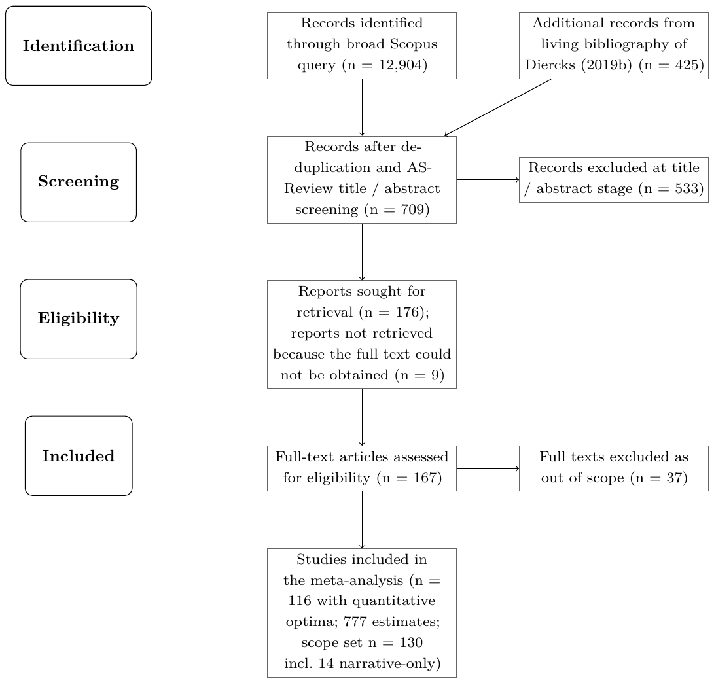

Optimal Inflation Rate: A Meta-Analysis
Matej Opatrny, Martin Opatrny, Tomas Havranek, Zuzana Irsova, Mojmir Hampl (2026), "Optimal Inflation Rate: A Meta-Analysis." Charles University, Prague. Available at meta-analysis.cz/inflation.
Matej Opatrnya Martin Opatrnyb Tomas Havraneka, c,d Zuzana Irsovaa, d Mojmír Hample
aInstitute of Economic Studies, Charles University, Prague
bAnglo-American University, Prague
cCentre for Economic Policy Research (CEPR), London
dMeta-Research Innovation Center at Stanford (METRICS)
eCzech Fiscal Council, Prague, Czech Republic
June 7, 2026
An online appendix with data, code, and extraction prompts is available at meta-analysis.cz/inflation. Corresponding author: Matej Opatrny, matej.opatrny@fsv.cuni.cz. The authors note that the paper represents their own views and not necessarily those of any affiliated institution. All remaining errors are ours.
Abstract
We revisit the optimal long-run inflation rate using 777 estimates from 116 primary studies published between 1989 and 2026, the largest sample on the topic to date. To our knowledge, this is among the first economics meta-analyses in which primary-data extraction is done from start to finish through a documented and auditable large-language-model pipeline, calibrated against a hand-coded training set and released for replication. The literature points to an optimum of about 0.6 percentage points per year, well below the two-percent targets used by most advanced-economy central banks. The gap should not be automatically read as a verdict against the two-percent norm. Measurement error in published price indices could close, widen, or even reverse the gap, and the structural literature itself cannot pin down the sign of the required correction. Bayesian model averaging over the full set of structural moderators shows that cross-study variation is driven by real modelling choices rather than by selective reporting. The main drivers are the choice of monetary benchmark (Friedman rule vs. laissez-faire), the transactions-frictions technology, the assumed shock structure, and the class of nominal-rigidity contract. The non-parametric caliper test finds no upward bunching at the two-percent target. The paper contributes a reproducible LLM-assisted extraction pipeline for structurally calibrated literature and a quantitative decomposition of where the optimal-inflation literature disagrees.
Keywords: Meta-analysis, optimal inflation rate, New Keynesian models, publication bias, Bayesian model averaging, measurement error, large language models
JEL Codes: E31, E52, C11
1. Introduction
Several major advanced-economy central banks use two-percent inflation targets, while others use ranges or target different price indices close to that benchmark. The two-percent target has become the most widely shared feature of the global monetary system, and it is routinely justified by reference to the large structural literature that computes the welfare-maximising rate of inflation in calibrated New Keynesian economies. The most comprehensive synthesis of that literature to date is the qualitative reader's guide of Diercks (2019b), which lists more than four hundred studies and discusses their findings in narrative form. That study does not pool the estimates, correct them for publication selection, or attempt a quantitative decomposition of their heterogeneity. To our knowledge, no formal quantitative meta-analysis of the optimal long-run inflation rate exists. We provide one.
We assemble a dataset of 777 estimates of the long-run optimal rate of inflation, drawn from 116 primary studies (within a scope set of 130) published between 1989 and 2026. Every estimate is extracted by a reproducible LLM-assisted pipeline (Cook et al., 2026; van de Schoot et al., 2021). The prompt was first calibrated against a hand-coded training set of seven studies and 79 row-level estimates, then audited against a 31-paper full-text cross-check, and finally run on the remaining 160 PDFs at a marginal cost of under thirty cents per paper. The pipeline returns the point estimate, the bibliographic identifier, and a 57-field moderator vector (51 structural design dummies plus 6 publication characteristics) that records every major modelling choice made by the primary author, including price and wage rigidity, money-demand technology, the class of policy rule, the presence of an effective lower bound, and the welfare criterion. We then run the resulting evidence base through the applicable publication-selection diagnostics: FAT-PET, PEESE, -uniform, and the non-parametric caliper test of Gerber, Malhotra, et al. (2008). We also apply Bayesian and frequentist model averaging with the dilution prior of George et al. (2010) over the set of structural moderators. The data, code, and extraction prompts will be released at the project's web appendix at the journal-deposit stage, and reviewer access is available on request. Any fresh API re-run should be read as a self-consistency audit rather than as a bit-for-bit reconstruction, because residual variation remains at the inclusion-gate stage and is documented in Appendix B.6.
We show that the structural literature does not, on average, support the two-percent target. The author-preferred mean across studies is 0.61 percent per year (95% confidence interval [0.25, 0.97], 116 clusters), and an alternative inverse- study-democracy weighting over all 777 estimates gives the same picture at 0.59 percent per year. Funnel-based diagnostics on the full sample produce FAT-PET and PEESE intercepts in the same range, and the caliper test finds no upward bunching at the two-percent target.
The heterogeneity in reported optima is driven by model-design choices rather than by statistical artefacts. Studies that use the Friedman rule as the welfare benchmark report optima about 3.3 percentage points lower than the sample average, and studies that use a laissez-faire monetary regime as the benchmark report optima about 4.0 percentage points higher. Transactions-frictions technology also splits the corpus by sign, where cash-in-advance specifications give −1.5 pp and cashless specifications give +1.5 pp. The shock structure splits it the same way, with TFP shocks at −1.3 pp and cost-push shocks at +1.7 pp. Non-Calvo Taylor-contract pricing lowers reported optima by about 3.6 percentage points, and all of these moderators have posterior inclusion probabilities at or near one. Downward nominal wage rigidity enters the BMA with PIP = 0.87 and a coefficient of +1.4 percentage points, recovering the magnitude that the wage-rigidity tradition argues for on theoretical grounds. Central-bank-affiliated authors report optima 0.74 pp below their university-affiliated counterparts, conditional on the structural moderators (PIP = 0.89), the opposite sign of an institutional-advocacy story.
In our corpus, 761 of 777 within-paper standard errors are bootstrap dispersion proxies rather than CI-derived sampling SEs, so we do not read the coefficient in the BMA as a FAT-PET test of publication bias. We verify in a robustness BMA that the structural-moderator ranking does not change when the SE coefficient is included. The publication-bias conclusion instead rests on the non-parametric caliper test of Gerber et al. (2008) applied to the full 777-row sample, which fails to reject the null of no upward bunching at the two-percent target. We also report the -uniform of van Aert and van Assen (2026) estimated on the 16 rows with genuine sampling SEs as an illustrative robustness check rather than as confirmatory evidence: those rows come from only three independent paper clusters and the test is too underpowered to support an inferential claim, so we read it descriptively as consistent with the caliper-test conclusion.
The implications for monetary policy follow directly. The structural literature does not, on its own terms, point to two percent as the welfare-maximising long-run rate of measured inflation, and its central tendency sits below one. The two-percent target is consistent with the structural literature only under specific design bundles, most notably the cashless, cost-push-driven, Calvo-price calibration of Coibion, Gorodnichenko, and Wieland (2012), which is not representative of the majority of the studies in our sample. This is a statement about model design rather than about price-index measurement, and it follows from the BMA heterogeneity decomposition once the relevant moderators are switched on.
A separate question is whether the headline number, expressed in measured-CPI units, can be applied to a target for the true, welfare-relevant rate of inflation. The direction of any such adjustment is not clear. If primary studies are read as calibrating directly to measured CPI, the implied true optimum equals the measured optimum minus an upward CPI bias and sits close to zero; if instead the model is read in true-inflation units, then a two-percent measured target maps to about one-percent true, which lies inside the range our literature already supports. Schmitt-Grohé and Uribe (2012b) show that the direction of the appropriate correction depends on whether prices are sticky in the New Keynesian block, and we read our own exercise as the quantitative complement to their theoretical argument rather than as a substitute for it. The size of the correction is itself unresolved: traditional Boskin-style estimates of upward bias from quality and new-goods effects (Boskin, Dulberger, Gordon, Griliches, & Jorgenson, 1996; Broda & Weinstein, 2010; Gordon, 2006; Hausman, 2003; Lebow & Rudd, 2003; Moulton, 2018) are partially offset by the downward bias from under-representation of owner-occupied housing services (Hampl & Havránek, 2017). We therefore do not propose a specific numerical translation between measured and true inflation, and we report measurement-error adjustments only as a sensitivity exercise.
Two further limitations restrict how broadly the headline applies. Only sixteen of the 777 estimates carry a sampling standard error from a reported confidence interval, and they cluster in three papers, so our inference puts primary weight on paper-level summaries and on the non-parametric caliper test. About 85 percent of the estimates are also calibrated to United States data: we identified exactly one structural study with a post-communist calibration (Lipińska, 2015, six estimates) and none for a Latin American or other emerging market. Central banks outside the United States should therefore reapply both the structural heterogeneity correction of Section 6 and a local CPI-measurement check before tying a target to our headline.
This paper makes three contributions. First, to our knowledge, this is among the first economics meta-analyses in which primary-study data extraction is performed from start to finish through a documented and reproducible LLM-assisted pipeline, following the forthcoming MAER-Net reporting guidelines for AI-assisted meta-analysis (Cook et al., 2026); we release the resulting audited dataset of 777 estimates with 57 moderators per row (51 structural and 6 publication). Second, on inference, we apply the applicable publication-selection diagnostics (caliper test, FAT-PET, PEESE, -uniform; Gerber et al., 2008; Stanley, 2005; Stanley & Doucouliagos, 2014; van Aert & van Assen, 2026) to a corpus in which 761 of 777 standard errors are bootstrap-within-paper proxies rather than sampling standard errors, and we document transparently which estimators identify what under this precision structure. Third, on substance, we produce the first quantitative heterogeneity decomposition of the optimal-inflation literature. The structural drivers and the author-affiliation contrast summarised above are identified jointly under a dilution prior on the moderator schema.
The remainder of the paper is organised as follows. Section 2 places the literature in its theoretical context and lists the individual studies that anchor the two tails of the distribution. Section 3 describes the search, extraction, and estimation pipeline. Section 4 reports the resulting dataset of 777 estimates and the structural moderators. Section 5 reports the publication-selection diagnostics, the Bayesian and frequentist model-averaging results, and the implied optima for a set of stylised economies. Section 6 reconciles the estimates with the most influential primary studies, draws out the implications for the two-percent target under the CPI-bias reading, and closes with a structured list of caveats. The full data, code, and extraction prompts are posted at the project's web appendix so that any reader can replicate, audit, or extend the analysis.
2. Related literature
The paper sits at the intersection of three bodies of work: the theoretical literature on the optimal long-run rate of inflation, the small set of existing qualitative reviews of that literature, and the emerging methodological literature on large-language-model assisted evidence synthesis. In this section we review the theoretical debate, describe how our dataset relates to the reader's guide of Diercks (2019b) and to earlier meta-analyses in monetary economics, and close with the three specific gaps that our paper fills.
The modern debate on the optimal inflation rate is organised around a small number of competing forces, each pointing to a different prescription. Friedman (1969) argues that, because producing money is nearly costless, the social optimum requires the nominal interest rate to equal zero, which implies a steady-state deflation equal to the real rate of interest. The argument rests on the role of money in reducing transaction costs, and it has been formalised in cash-in-advance environments by Lucas (1980) and in money-in-the-utility settings by Sidrauski (1967). In calibrated versions of these frameworks the optimal inflation rate is typically several percentage points below zero.
The rise of New Keynesian monetary economics shifted the argument towards zero rather than negative inflation. When firms adjust prices infrequently, non-zero steady-state inflation distorts relative prices and generates a welfare-reducing dispersion of output across firms. In the Calvo framework of Calvo (1983) the planner's first-best can be approximated by stabilising inflation at zero. Similar conclusions obtain under the Rotemberg quadratic-adjustment-cost formulation of Rotemberg (1982), the fixed-duration contracts of Taylor (1980), and the textbook cashless-limit representation of the New Keynesian model of Woodford (2003). Adding sticky wages as in Erceg, Henderson, and Levin (2000) pushes the optimum slightly away from zero but leaves it close to price stability, and quantitative medium-scale DSGE exercises such as those of Schmitt-Grohé and Uribe (2005b) tend to confirm this conclusion.
A third channel enters the literature once the effective lower bound on the nominal interest rate is taken seriously. When the central bank loses the ability to cut rates further in recessions, a positive inflation target creates precautionary policy space by raising the steady-state nominal rate. Coibion et al. (2012) formalise this trade-off in a calibrated New Keynesian environment and report an optimum of 1.1 percent per year in their benchmark calibration, rising to 1.4 percent once uncertainty about the model's parameters is taken into account. Repeatedly drawing from the parameter distribution, they obtain a ninety-percent credible interval for the optimum of 0.1 to 2.2 percent per year, which includes the explicit targets announced by major central banks. The NBER working paper of Andrade, Galí, Le Bihan, and Matheron (2018) extends this logic to the decline in the natural rate of interest observed since the global financial crisis, and argues that, conditional on a permanently lower , the optimal target sits closer to two percent than to the pre-crisis benchmark. Andrade, Galí, Le Bihan, and Matheron (2021) extend the same framework to the euro area and reach a quantitatively similar conclusion. The narrative review of Ascari and Sbordone (2014) provides a complementary summary of how trend inflation interacts with sticky prices, indexation, and policy-rule design, and Schmitt-Grohé and Uribe (2010) synthesise the New Keynesian, monetary, and fiscal channels in the Handbook of Monetary Economics. The quantitative size of the lower-bound premium turns out to be sensitive to trend productivity growth, to the frequency with which the lower bound binds, and to interactions with fiscal policy. These moderators are all present in our coded dataset and surface in the heterogeneity analysis.
A parallel policy-oriented literature reaches the same qualitative conclusion, that the lower-bound constraint argues for a higher inflation target, without producing a structurally calibrated welfare optimum, and we therefore treat it as context rather than as an entry in the meta-analytic dataset. Blanchard, Dell'Ariccia, and Mauro (2010) were among the first to suggest, in the wake of the global financial crisis, that the long-run inflation target might need to be raised to give monetary policy more room to manoeuvre at the lower bound. Ball (2014) sharpens the argument and proposes an explicit four-percent target, trading off a modest increase in the steady-state inflation cost against a sizeable reduction in the frequency and depth of lower-bound episodes. Kiley and Roberts (2017) and Bernanke, Kiley, and Roberts (2019) use the FRB/US model to quantify how often the effective lower bound binds when the neutral nominal rate is around three percent. They find that, under historically estimated rules, the constraint can bind as much as one third of the time, which strengthens the case for either a higher target or alternative makeup strategies. Finally, Afrouzi, Halac, Rogoff, and Yared (2024) argue that the global decline in trend inflation over the past four decades has been driven by political-economy forces that may now be reversing, so that the relevant policy question is increasingly whether central banks can defend a low target rather than whether to raise it. None of these contributions is a structural welfare-optimum estimate of the kind we synthesise, but the policy benchmarks they establish frame the range against which our pooled estimate of 0.6–1.0 pp/year is naturally compared.
A fourth channel, which has become increasingly prominent in the narrative literature, is downward nominal wage rigidity. If nominal wages fall only reluctantly then a positive inflation rate greases the wheels of the labour market, as argued by Kim and Ruge-Murcia (2011). The channel is quantitatively strong enough that models with occasionally-binding floors on nominal wage growth can generate optimal inflation of two percent or more even in the absence of a binding lower bound. Because wage rigidity is a structurally distinct feature from price rigidity, our dataset records it in a separate closed-vocabulary field. The heterogeneity analysis of Section 5 confirms that this channel is quantitatively important. Once shock structure, monetary benchmark, transactions-frictions technology, and author affiliation are jointly conditioned on, the DNWR indicator enters the BMA with posterior inclusion probability 0.87 and a positive coefficient of +1.4 pp.
A final strand interacts trend inflation with financial frictions, heterogeneous agents, and fiscal policy. The Bernanke, Gertler, and Gilchrist (1999) financial-accelerator mechanism modifies the cost-of-dispersion argument in ways that can raise or lower the optimum depending on the shock structure. Ramsey-planner exercises that include distortionary taxation tend to recommend positive inflation as a source of seigniorage revenue. And recent models with heterogeneous agents show that redistributive concerns can generate sizeable positive optima even when the aggregate New Keynesian channel alone would recommend zero. Each of these mechanisms is a coded moderator in our dataset.
The most comprehensive existing review of this body of work is the living bibliography of Diercks (2019b), a reader's guide to the optimal-inflation literature maintained at optimalinflation.com. The guide catalogues more than four hundred studies from the mid-twentieth century to the present and classifies them along a small number of broad dimensions such as the family of model, the presence of a lower bound, the inclusion of a price or wage rigidity, and the distinction between open and closed economies. It is widely cited within the monetary economics community, and we use it as a cross-reference seed in the literature search reported in Appendix A.
Our paper differs from this reader's guide in three respects that are central to its scientific value. The Diercks guide is qualitative: it records which models have been proposed and what they broadly conclude, but does not extract numerical optimal-inflation values nor reconcile them across studies. We instead code a single quantitative outcome variable, the long-run optimal net rate of inflation in annualised percentage points, for every primary study in which at least one such value is reported. The Diercks taxonomy is also coarse: he tags papers with at most a handful of broad labels, whereas we code fifty-seven structural and publication moderators per estimate, most of them as row-level closed-vocabulary fields. As a result, a single paper contributing several estimates under different policy regimes or shock structures is represented faithfully in the analysis dataset. And the Diercks bibliography does not engage with the methodological machinery of quantitative evidence synthesis. There is no publication-bias diagnostic, no random-effects synthesis, and no model averaging across moderators. These three gaps are exactly what a meta-analysis is designed to fill.
To the best of our knowledge this is the first quantitative meta-analysis of the optimal long-run rate of inflation. There is, however, an active meta-analytic literature on adjacent parameters of monetary and macroeconomic models, including the intertemporal elasticity of substitution in consumption of Havranek, Horvath, Irsova, and Rusnak (2015), the publication bias in measured intertemporal substitution of labour supply of Elminejad, Havranek, and Horvath (2023), and the bank-competition and financial-stability nexus of Zigraiova and Havranek (2016). These studies demonstrate that quantitative synthesis of structural monetary-economics parameters is feasible and that publication-selection corrections routinely move point estimates by economically meaningful magnitudes. We build on the reporting and methodological standards they helped establish, in particular the guidelines of Stanley and Doucouliagos (2012) and Havranek et al. (2020).
A small but rapidly growing methodological literature asks whether large language models can accelerate literature reviews and structured data extraction. The screening stage is by now routine. The ASReview active-learning tool of van de Schoot et al. (2021) is widely adopted in fields ranging from medicine to the social sciences, and we use it here. The extraction stage, in which a PDF is converted into a structured row of a dataset, is a newer frontier. Our paper is, to our knowledge, one of the first meta-analyses in economics in which the extracted fields are produced by a transparent, auditable language-model pipeline. The pipeline is calibrated against a hand-coded training set, archived with its exact prompts, model identifiers, inputs, and seeds, and released for replication alongside the paper, with residual cross-run variation documented in Appendix B.6.
Combining these strands, our contribution is threefold. We convert the qualitative bibliography of Diercks (2019b), updated through April 2026 with a fresh Scopus search, into the first quantitative dataset of optimal-inflation values, comprising 777 estimates from 116 primary studies that report a quantitative optimum (within a scope set of 130). We apply the standard modern evidence-synthesis toolkit, including random-effects synthesis, funnel-asymmetry and precision-effect tests, the caliper test of Gerber et al. (2008), the -uniform estimator of van Aert and van Assen (2026), and Bayesian and frequentist model averaging, to extract a defensible consensus estimate and to identify the structural features that drive cross-study heterogeneity. And we publish the extraction pipeline and its prompt as a methodological template for future meta-analyses in macroeconomics, where raw data are costly to collect and the coding burden has historically been a binding constraint.
3. Methodology
Our methodology has two pillars. The first is an extraction pillar: we translate 130 heterogeneous primary studies into a single structured dataset using a reproducible, LLM-assisted pipeline built around a small hand-coded training set. The second is an inference pillar: we combine paper-level summaries (the author-preferred mean and the inverse- study-democracy mean), a non-parametric selection diagnostic (the caliper test), and Bayesian and frequentist model averaging to map the resulting 777 estimates onto a defensible summary of the optimal long-run rate of inflation.
Meta-analyses in economics are limited by coding: a single estimate typically requires reading several pages of a model section, a table of calibration targets, and an appendix of robustness checks. With 130 primary studies and the structural moderator schema described in Section 4, the full coding matrix contains tens of thousands of cells. The raw phase-1 extraction file contains 79 columns rather than 57 because, in addition to the moderator inputs, it stores the dependent variable and its precision, study and estimate identifiers, bibliographic fields, twelve calibrated deep-parameter values reported descriptively, several free-text justification fields, and quality-assurance flags. We remove the identifiers, the outcome and its standard error, the calibrated parameters, and the free-text fields, and we dummy-expand the remaining categorical fields. The resulting BMA design matrix contains the 57 candidate moderators reported in Table 2. Specifically, we get 51 structural design dummies (panels B–J) plus 6 publication characteristics (panel K). Of these, 43 survive the zero-variance and perfect-collinearity filter and enter the posterior summaries. Two practical considerations make a documented LLM-extraction pipeline attractive in this setting. First, it sharply reduces the time cost of extraction. A single human coder reading a sixty-page DSGE paper, transcribing the calibration table, identifying every reported optimum, and coding the structural-moderator vector typically needs the better part of a working day. The same task with a documented prompt and a stage-tiered model pipeline runs in under five minutes per paper at a marginal cost of a few cents. Second, and equally important for credibility, the same pipeline can be re-run on the same corpus repeatedly, with the same prompts, the same model versions, and a fresh random seed each time. This produces a self-consistency distribution over the extracted fields that a human coder cannot generate at any reasonable cost.
We use LLMs as prompt-engineered structured extractors rather than as autonomous coders (van de Schoot et al., 2021). Four principles guided the pipeline we built around them. First, the prompt was developed against a hand-coded training set of seven primary studies (Cooley & Hansen, 1989; Amato & Laubach, 2004; Adam & Billi, 2006; Amano, Ambler, & Rebei, 2007; Amano, Moran, Murchison, & Rennison, 2009; Abo-Zaid, 2013; Abo-Zaid, 2015a), totalling 79 row-level estimates that were coded by hand by one of the authors directly into Excel before any LLM run. The early human-coded schema differed in a small number of bookkeeping columns from the final schema (the final schema added fifteen columns documenting publication status, friction types, and estimator details); we re-checked the new columns against the original seven papers when the schema was finalised. Iteration on the prompt continued until both Claude Opus 4.5 and Claude Sonnet 4.5 were calibrated against the human coding of the categorical moderators and the numerical point estimates of the seven training studies, with residual disagreements documented in Appendix B.6. No additional manual extraction of numerical values was performed on the remaining 160 PDFs. Before launching the production run, we ran the pipeline end-to-end on a 31-paper full-text cross-check sample. The list is documented in ai_dataset/validation/audit_round1_report.md and is biased toward the earliest, longest, and structurally most complex papers in the corpus. We verified each row against the source PDF. A small number of prompt definitional issues identified at this stage, most prominently a row-level inconsistency in how the Ramsey flag was applied, were addressed by extending the closed vocabularies and re-extracting, before the production run on the full 167-PDF corpus was launched.
Second, each PDF was converted to Markdown with opendataloader-pdf, the open-source PDF parser developed for LLM ingestion, which preserves table structure and headings far more reliably than page-by-page text extraction and materially reduces transcription errors on the calibration tables in which most DSGE optimal-inflation values are reported. Third, only studies whose pre-scan stage identifies at least one numerical, long-run optimal-inflation value that can be annualised are passed to the expensive extraction stages; expository surveys, theoretical-only chapters, and papers that report only welfare losses without a numerical optimum are excluded. Of the 167 PDFs we examined, 130 pass scope screening and 116 (69.5% of the full-text pool) report a quantitative optimum and contribute the 777 estimates that enter the analysis dataset. The remaining 14 in-scope studies are theoretical or qualitative and are listed in the study table but excluded from quantitative pooling. Fourth, model versions, prompt text, temperature, random seed, and per-paper input Markdown are all stored in the replication package so every extraction is re-runnable and auditable from the archived prompts, model identifiers, inputs, and seeds.
The workflow is implemented in Python (python/INFLATION_2_0.py) and runs in four stages that share a cached Markdown input. A Sonnet 4.5 pre-scan screens each paper for the existence of quantitative optimal-inflation values; papers that fail the gate are skipped and the three downstream stages are not charged. A Sonnet 4.5 metadata stage extracts bibliographic fields (authors, journal, year, DOI). An Opus 4.5 structure stage extracts the categorical moderators describing the model, the policy regime, price and wage frictions, money-demand technology, shocks, augmentations, welfare criterion, and solution method. The choice of Opus follows a four-paper A/B test in which Sonnet systematically under-coded augmentations and mis-classified the policy regime; the roughly 5% cost premium of Opus over Sonnet was acceptable given the quality gap. A final Opus 4.5 results stage extracts, for every reported estimate, the numerical long-run optimal inflation rate, the annualised units, the reported confidence interval when present, and a short verbatim assumption string.
Each extraction field is defined in the system prompt with an explicit closed vocabulary: a short enumeration of admissible values, short descriptions, and a default rule to apply when evidence is mixed. The pipeline is checkpointed per paper (checkpoint.jsonl plus per-paper partial Excel output) so a mid-run crash does not waste spent tokens; temperature is set to zero and the random seed fixed. To give a flavour of the prompt discipline, the row-level policy-regime field is defined verbatim as follows:
Policy_Regime -- closed vocabulary (ROW-LEVEL)
The monetary-policy rule under which THIS row's inflation value obtains. Crucial for row-level heterogeneity. Many papers compare multiple regimes in a single table; code each row separately. Pick exactly one:
• "Ramsey" -- jointly-optimal planner solution with commitment.
• "Ramsey_discretion" -- optimal policy without commitment.
• "Friedman_rule" -- zero nominal interest rate / deflation at rate of time preference.
• "Taylor_rule" -- simple interest-rate rule reacting to inflation (possibly output); "simple rules" results.
• "Optimized_Taylor_rule" -- Taylor-type rule with coefficients optimized over welfare.
• "Zero_inflation" -- price-stability target imposed by assumption.
• "Inflation_targeting" -- empirical/announced target rate (typically 2%); historical policy calibration.
• "Laissez_faire" -- competitive equilibrium with no policy / constant money growth / given exogenous policy.
• "Estimated_policy" -- estimated policy rule from data (empirical papers).
• "Other" -- any other named rule (document in Results_Inflation_Assumption).
• "NA" -- genuinely unclear.
Priority rule. If a row is the Ramsey solution of a model WITH a binding fiscal constraint (= the v3.2 Ramsey_Rule=1 case), code as "Ramsey". Use "Friedman_rule" even inside a Ramsey paper if that specific row shows the Friedman-rule benchmark.
The full prompt set (roughly 1,200 lines in total) with every closed vocabulary, priority rule, and worked example is archived in the replication package under python/prompts/. The full four-stage extraction on the 167-PDF corpus cost approximately $0.30 per PDF on average at April 2026 list prices. The gains come from three design choices: cached Markdown shared across stages, routing Sonnet to the cheap triage stages, and the pre-scan gate that short-circuits the three expensive stages for non-quantitative papers.
Three caveats are worth flagging. Classification error does not average out if it is correlated with the outcome variable. The 31-paper cross-check described above revealed a definitional inconsistency in how the Ramsey flag was applied at the row level in two of the cross-check papers, and the issue is documented in the codebook. We addressed it by extending the policy-regime vocabulary and re-extracting the structure stage before the production run. The pipeline cannot detect features that are not discussed in the paper but are present in the accompanying code: undocumented deviations from the published model are invisible to us. And LLM outputs are not perfectly deterministic even at temperature zero, so we archive the model versions (claude-sonnet-4-5-20250929 and claude-opus-4-5-20251001), the stored prompts, and the random seed used at inference.
To quantify the residual non-determinism, we re-ran the full stage-tiered pipeline on a stratified random sample of 5 papers from the analysis dataset, with prompts, models, and temperature fixed and only the random seed changed. The Round-2 self-consistency results, per-field exact-match rates for the categorical moderators and mean absolute error for the numerical fields, are summarised in Appendix B and the underlying raw output is archived under ai_dataset/validation/ (see audit_round2_report.md in the same directory).
We now describe the estimators that take the coded dataset into the results of Section 5. Our estimator hierarchy is organised by the credibility of the underlying identifying assumptions in this calibration-dominated literature, following the practitioner guidance of Irsova, Doucouliagos, Havránek, and Stanley (2024) and the small- cautions of Mathur (2024) and Cook et al. (2026). The two primary headline numbers are paper-level summaries that do not require sampling standard errors. The first is the simple mean of authors' preferred specifications, taken as one row per study with paper-clustered standard errors. The second is the inverse- study-democracy mean over all 777 estimates, which weights each estimate by the reciprocal of the number of estimates contributed by its parent study. The primary publication-bias diagnostic is the non-parametric caliper test of Gerber et al. (2008), which complements the paper-level summaries when selection is discontinuous: if researchers preferentially publish estimates above a salient threshold , the share of estimates within a narrow symmetric window lying above should exceed one-half. Thresholds of policy interest in our setting are (zero measured inflation, the price-stability benchmark) and (the stylised central-bank target); we report results for percentage points.
All classical funnel-based estimators are reported as diagnostics rather than as headlines, because only 16 of our 777 estimates carry a CI-implied sampling standard error and these 16 rows belong to only three independent papers. We report the funnel-asymmetry (FAT) and precision-effect (PET) regression
estimated by ordinary least squares with study-clustered standard errors, alongside its precision-effect-with-standard-error variant (PEESE; Stanley & Doucouliagos, 2014) that replaces with and the weighted average of adequately powered estimates (WAAP; Ioannidis, Stanley, & Doucouliagos, 2017). We do not report a separate WAAP point estimate because 761 of the 777 standard errors are bootstrap-within-paper proxies following the Havranek et al. (2015) convention rather than sampling standard errors, so the slope of equation (1) tests within-paper dispersion, not classical small-sample selection. We therefore present the corresponding intercept transparently as a diagnostic.
For the sixteen-estimate genuine-standard-error subsample we also report, as an upper-bound sensitivity, a two-level random-effects model
estimated by restricted maximum likelihood (REML) as implemented in metafor for R, and the -uniform selection estimator of van Aert and van Assen (2026), which exploits the fact that, under the null, -values of statistically significant findings are uniform; deviations from uniformity identify both the underlying effect and the degree of selection. Because the sixteen rows come from only three independent paper clusters, we flag both REML and -uniform as illustrative ceilings rather than identified evidence: cluster-robust inference with fewer than ten clusters is unreliable, and a pooled mean from three primary studies essentially averages within-paper variation.
The MAIVE estimator of Irsova, Bom, Havránek, and Rachinger (2025) is designed for settings in which reported sampling standard errors may be mechanically tied to reported effects and a valid precision instrument, typically based on primary-study sample size, is available. That structure is absent here. Optimal-inflation papers are overwhelmingly calibration exercises rather than reduced-form estimations: 761 of 777 standard errors are bootstrap-within-paper dispersion proxies, and the 16 genuine-SE rows belong to only three independent paper clusters. We therefore do not implement MAIVE as a formal estimator in this corpus. We cite it to acknowledge that spurious precision is a first-order concern in empirical meta-analysis and to explain why our publication-bias conclusion rests on the non-parametric caliper test and paper-level summaries rather than on a funnel-based correction. RTMA is likewise not implemented because it requires a meaningful classification of affirmative and nonaffirmative estimates based on sampling uncertainty, which is unavailable for the calibration-based majority of the corpus. A single "overall" summary nevertheless hides the dependence of the optimum on modelling choices. We therefore also construct best-practice synthetic scenarios by fixing a subset of moderators at a policy-relevant value and predicting from the BMA posterior. We report the posterior predictive mean and a descriptive plausibility range ( within-design sample standard deviation, not an inferential interval), marginalising over the remaining moderators at their sample means.
Selective reporting is not the only source of non-standard inference in meta-analysis. With a moderator schema covering all major structural and methodological dimensions of the optimal inflation literature, the space of linear heterogeneity regressions is too large for classical stepwise selection, whose confidence intervals are known to undercover (Steel, 2020). We therefore average over the model space. For each model in the space of all subsets of the moderators we compute the posterior probability
using the closed-form marginal likelihood that follows from a Gaussian likelihood and Zellner's -prior on the coefficients (Zeugner & Feldkircher, 2015). Our headline specification uses the unit-information prior () for the coefficients and the dilution prior of George et al. (2010) for the model space, which penalises collinear models and is the recommended default when moderators are highly correlated. For each coefficient we report the posterior inclusion probability (PIP), the posterior mean, and the posterior standard deviation; coefficients with are conventionally called "robust" (Eicher, Papageorgiou, & Raftery, 2011; Fernandez, Ley, & Steel, 2001). The full space is too large to enumerate, so we sample it with the Markov-chain-Monte-Carlo model-composition () algorithm in the BMS package for R, burning in models and recording the next . We verify robustness with respect to the BRIC prior of Fernandez et al. (2001) combined with the random model-size prior of Ley and Steel (2009), and the HQ prior combined with the same random model-size prior; the three prior combinations deliver nearly identical posterior inclusion probabilities.
As a frequentist cross-check we also re-run the heterogeneity analysis using model averaging with Akaike weights (Burnham & Anderson, 2002), which averages OLS coefficients over the top models ranked by AIC, and report FMA alongside BMA for every coefficient. Standard errors are heteroscedasticity-robust and clustered at the study level, which is the level at which extracted estimates share the primary-study calibration; inferences are conservative in the sense that a weaker true dependence structure would make the clustered standard errors too wide rather than too narrow. All code for the above procedures is in R/Inflation_v34.R and stata/Inflation_v34.do.
We follow the reporting checklist of Havranek et al. (2020): a PRISMA flow diagram (Appendix A), a variable dictionary (Table 2), funnel plots and publication-bias diagnostics (Section 5), and a replication package that covers every step from PDF ingestion to final table.
LLM-assisted adversarial checklist
As a supplementary quality-control step, separate LLM prompt sessions were used to generate a checklist of possible numerical, factual, and interpretive inconsistencies in the manuscript. The checklist was reviewed by the authors against the primary sources, the replication files, and the manuscript text. This procedure did not generate estimates, coding decisions, or substantive conclusions; it served only as a human-review checklist. The protocol and outputs are archived in the replication package.
4. Data
This section describes how we assembled our dataset of 777 point estimates of the optimal long-run rate of inflation from 116 primary studies (within a scope set of 130). The large-language-model pipeline that produced the coded fields is documented in Section 3; here we focus on the corpus, the screening gate, and the variables that enter the heterogeneity analysis. The full PRISMA flow diagram is reproduced in Appendix A.
Following the guidelines of Havranek et al. (2020) and Stanley and Doucouliagos (2012), we combine a database search with a curated bibliography. The primary source is the Scopus database. The broad keyword query
TITLE-ABS-KEY("inflation") AND TITLE-ABS-KEY("monetary")
AND SUBJAREA(ECON OR BUSI)
returns 12,904 records system-wide at the time of search (April 2026, verified through the Scopus REST API; this figure includes a refresh of post-2021 entries, and the resulting record counts at each screening step are reported in the PRISMA flow diagram in Appendix A). As a focused complement we also ran a narrower composite query on the same database. It combines the phrases "optimal inflation", "optimal rate of inflation", "optimal trend inflation", and "optimal inflation target" with the conjunction of "Ramsey" and "monetary policy", restricted to articles, conference papers, and reviews in Economics and Business. The narrower query returns 380 records all-time and is fully contained in the broad pool. As a cross-reference seed we use the living bibliography optimalinflation.com of Diercks (2019b), which catalogues 425 studies on the optimal steady-state rate of inflation from the mid-twentieth century to the present. Cross-referencing Scopus with this bibliography ensures coverage of both the recent DSGE-based literature (well indexed in Scopus) and the older flexible-price and money-demand tradition (under-indexed in Scopus but tracked by the bibliography).
The union of the two sources is de-duplicated and screened on title and abstract using the active-learning tool ASReview (van de Schoot et al., 2021). We retrieve full texts, apply a full-text eligibility check, and arrive at 167 PDFs that are sent to the extraction pipeline. Of these, 130 pass the scope screen, and 116 (69.5% of the full-text pool) pass the quantitative-result gate. A study enters the quantitative analysis dataset if and only if it reports at least one numerical long-run optimal-inflation value that can be annualised. The 116 qualifying studies contribute 777 point estimates. The remaining 14 in-scope studies are theoretical or qualitative; they are listed in the study table for transparency but excluded from quantitative pooling. Appendix A reproduces the full PRISMA flow.
Table 1 lists the 116 primary studies that contribute estimates to the analysis dataset (the remaining 14 of the 130 scope-set studies are theoretical or qualitative and report no quantitative optimum), together with the outlet in which each paper appeared and the number of row-level estimates extracted from each paper before winsorisation. The list is sorted by publication year, from the oldest contribution of Cooley and Hansen (1989) to the most recent work of Bonciani and Oh (2026); after the 5% winsorisation filter described in Section 3 the analysis dataset retains 777 estimates.1 This list is intended both as a transparency device and as a complete bibliography of the empirical basis of the meta-analysis, in the spirit of the reporting conventions advocated by Havranek et al. (2020) and adopted in Opatrny, Havranek, Irsova, and Scasny (2026).
| Study | Outlet | N |
|---|---|---|
| Cooley and Hansen (1989) | The American Economic Review | 10 |
| Imrohoroglu (1992) | Journal of Economic Dynamics and Control | 6 |
| King (1996) | Economic Review, Federal Reserve Bank of Kans... | 4 |
| Study | Outlet | N |
|---|---|---|
| Goodfriend and King (1997) | NBER Macroeconomics Annual | 2 |
| Mulligan (1997) | Journal of Political Economy | 1 |
| Rotemberg and Woodford (1997) | NBER Macroeconomics Annual | 2 |
| Feldstein (1997) | Reducing Inflation: Motivation and Strategy | 7 |
| Correia and Teles (1999) | Review of Economic Dynamics | 6 |
| Erceg et al. (2000) | Journal of Monetary Economics | 7 |
| Lucas (2000) | Econometrica | 4 |
| Adão, Correia, and Teles (2003) | Review of Economic Studies | 2 |
| Aoki (2001) | Journal of Monetary Economics | 1 |
| Wolman (2001) | Federal Reserve Bank of Richmond Economic Qua... | 3 |
| Kollmann (2002) | Journal of Monetary Economics | 5 |
| Khan, King, and Wolman (2003) | The Review of Economic Studies | 13 |
| Siu (2004) | Journal of Monetary Economics | 6 |
| Schmitt-Grohé and Uribe (2004a) | Journal of Macroeconomics | 4 |
| Schmitt-Grohé and Uribe (2004b) | Journal of Economic Theory | 3 |
| Amato and Laubach (2004) | Journal of Monetary Economics | 9 |
| Schmitt-Grohé and Uribe (2005b) | NBER Working Paper | 7 |
| Yun (2005) | The American Economic Review | 7 |
| Schmitt-Grohé and Uribe (2005a) | NBER Macroeconomics Annual | 21 |
| Adam and Billi (2006) | Journal of Money, Credit and Banking | 5 |
| Chugh (2006) | Review of Economic Dynamics | 10 |
| Levin, Lopez-Salido, and Yun (2007) | CEPR Discussion Paper DP6423 | 7 |
| Amano et al. (2007) | Journal of Money, Credit and Banking | 12 |
| Ascari and Ropele (2007) | Journal of Monetary Economics | 12 |
| Chugh (2007) | Journal of Monetary Economics | 14 |
| Faia and Monacelli (2007) | Journal of Economic Dynamics & Control | 6 |
| Schmitt-Grohé and Uribe (2007) | Journal of Monetary Economics | 6 |
| da Costa and Werning (2008) | Journal of Political Economy | 4 |
| Blanchard and Galí (2008) | NBER Working Paper 13897 | 1 |
| Arseneau and Chugh (2008) | Journal of Monetary Economics | 4 |
| Kollmann (2008) | Macroeconomic Dynamics | 5 |
| Faia (2008) | Macroeconomic Dynamics | 4 |
| Billi (2011) | Federal Reserve Bank of Kansas City Research ... | 2 |
| Kim and Ruge-Murcia (2009) | Journal of Monetary Economics | 4 |
| Fagan and Messina (2009) | ECB Working Paper Series | 6 |
| Chugh (2009) | Macroeconomic Dynamics | 6 |
| Hu and Kam (2009) | Journal of Macroeconomics | 4 |
| Faia (2009) | Journal of Monetary Economics | 4 |
| Amano et al. (2009) | Journal of Monetary Economics | 11 |
| Ravenna and Walsh (2011) | AEJ: Macroeconomics | 7 |
| Darracq Pariès and Loublier (2010) | ECB Working Paper Series | 4 |
| An (2010) | SMU Working Paper | 1 |
| Coibion et al. (2012) | Review of Economic Studies | 13 |
| Benigno and Paciello (2014) | NBER Working Paper 16386 | 5 |
| Lubik and Teo (2010) | CAMA Working Paper | 9 |
| Edge, Laubach, and Williams (2010) | Journal of Applied Econometrics | 1 |
| Schmitt-Grohé and Uribe (2010) | Handbook of Monetary Economics | 11 |
| Tang (2010) | Journal of Economic Dynamics & Control | 19 |
| Paciello and Wiederholt (2014) | Review of Economic Studies | 2 |
| Kim and Ruge-Murcia (2011) | Journal of Economic Dynamics & Control | 4 |
| B. K. Talukdar (2014) | B.E. Journal of Macroeconomics | 14 |
| Tulip (2011) | RBA Discussion Paper | 8 |
| Wolman (2011) | Journal of Money, Credit and Banking | 6 |
| Schmitt-Grohé and Uribe (2012b) | Journal of Monetary Economics | 2 |
| Montoro (2012) | Macroeconomic Dynamics | 6 |
| Motta and Tirelli (2012) | Journal of Money, Credit and Banking | 1 |
| Leith, Moldovan, and Rossi (2012) | Review of Economic Dynamics | 2 |
| Study | Outlet | N |
| Pontiggia (2012) | Journal of Macroeconomics | 2 |
| Schmitt-Grohé and Uribe (2012a) | Journal of Money, Credit and Banking | 8 |
| Weber (2012) | Kiel Working Paper | 5 |
| Andrés, Arce, and Thomas (2013) | Journal of Money, Credit and Banking | 7 |
| Abo-Zaid (2013) | Journal of Economic Dynamics & Control | 12 |
| Di Bartolomeo, Tirelli, and Acocella (2013) | International Journal of Central Banking | 6 |
| Lewis (2013) | Macroeconomic Dynamics | 2 |
| Annicchiarico and Rossi (2013) | Journal of Macroeconomics | 1 |
| Venkateswaran and Wright (2013) | NBER | 4 |
| Sims (2013) | Notre Dame Working Paper | 2 |
| Fasolo (2014) | Working Paper Series | 10 |
| Boehm and House (2014) | NBER Working Paper | 1 |
| Faia, Lechthaler, and Merkl (2014) | Journal of Money, Credit and Banking | 10 |
| F. O. Bilbiie, Fujiwara, and Ghironi (2014) | Journal of Monetary Economics | 8 |
| Abo-Zaid (2015a) | European Economic Review | 27 |
| Abo-Zaid (2015b) | Journal of Macroeconomics | 10 |
| Blanco (2021) | AEJ: Macroeconomics | 4 |
| Raissi (2015) | Economic Modelling | 3 |
| Arseneau, Chahrour, Chugh, and Finkelstein Shapiro (2015) | Journal of Money, Credit and Banking | 1 |
| B. Talukdar (2015) | Economics Bulletin | 4 |
| Nlemfu Mukoko (2016) | MPRA Paper | 8 |
| Nisticò (2016) | Journal of the European Economic Association | 7 |
| Kim and Ruge-Murcia (2019) | CIREQ Cahier | 1 |
| Hendrickson and Salter (2016) | Journal of Economic Dynamics & Control | 1 |
| Dordal i Carreras, Coibion, Gorodnichenko, and Wieland (2016) | Annual Review of Economics | 10 |
| Carlsson and Westermark (2016) | Journal of Monetary Economics | 15 |
| Abo-Zaid and Garín (2016) | Economic Inquiry | 13 |
| Kohlbrecher (2016) | Beiträge zur Jahrestagung des Vereins für Soc... | 7 |
| Basu and De Leo (2017) | Boston College Working Papers in Economics | 1 |
| Menna and Tirelli (2017) | Review of Economic Dynamics | 14 |
| Finocchiaro, Lombardo, Mendicino, and Weil (2018) | Journal of Monetary Economics | 8 |
| Ascari, Phaneuf, and Sims (2018) | Journal of Monetary Economics | 16 |
| Adam and Weber (2019) | American Economic Review | 3 |
| Andrade et al. (2018) | NBER Working Paper | 19 |
| Diercks (2019a) | SSRN | 4 |
| Paczos (2020) | Oxford Economic Papers | 5 |
| Choi and Foerster (2021) | Review of Economic Dynamics | 6 |
| Annicchiarico and Pelloni (2021) | Macroeconomic Dynamics | 3 |
| Benigno and Rossi (2021) | European Economic Review | 2 |
| Kiarsi (2021) | Economic Notes | 3 |
| Filiani (2021) | Journal of Macroeconomics | 4 |
| Matveev (2021) | Journal of Money, Credit and Banking | 5 |
| Andrade et al. (2021) | Journal of Economic Dynamics and Control | 14 |
| F. Bilbiie and Ragot (2021) | Review of Economic Dynamics | 16 |
| Garga and Singh (2021) | Journal of Monetary Economics | 3 |
| Mineyama (2022) | Journal of Economic Dynamics & Control | 23 |
| Nuño and Thomas (2022) | Annals of Economics and Statistics | 7 |
| Jiang (2022) | International Journal of Central Banking | 4 |
| Miura (2023) | Quarterly Review of Economics and Finance | 14 |
| Benmir, Jaccard, and Vermandel (2023) | European Economic Review | 3 |
| Deák, Levine, Mirza, and Pham (2026) | Surrey Discussion Paper | 11 |
| Jung (2025) | International Finance | 14 |
| Daudignon and Tristani (2025) | Journal of Money, Credit and Banking | 3 |
| Study | Outlet | N |
| Kirsanova, Leith, Machado, and Ribeiro (2025) | European Economic Review | 4 |
| Bonciani and Oh (2026) | Journal of Economic Dynamics and Control | 1 |
Notes: The table lists the 116 quantitative-contributor studies (the 14 in-scope studies that are theoretical or qualitative report no numerical optimum and are listed in the bibliography but omitted here), sorted by publication year. Column N is the number of row-level optimal-inflation estimates extracted from each study before downstream pipeline filters. The headline analysis sample of 777 estimates is obtained after dropping rows whose outcome value cannot be annualised; per-study Ns therefore sum to a slightly larger total than 777. (Rows whose bootstrap dispersion proxy is degenerate are retained here and in the paper-level summaries, and are dropped only from the precision-weighted funnel and BMA regressions of Section 5.) Outlet is the publishing journal for published articles or the working-paper series for unpublished manuscripts.
We code each primary study along the structural and methodological moderator dimensions that capture the modelling assumptions, solution method, calibration target, and publication metadata of the paper. All fields are produced by the reproducible LLM pipeline described in Section 3, which was calibrated on a hand-coded training set of seven primary studies before being released on the remaining 160 PDFs. The outcome variable of the meta-analysis is the long-run optimal net inflation rate in annualised percentage points. Sub-annual optima are annualised by the appropriate multiple, and negative optima (Friedman-rule outcomes) are retained with their sign. We winsorise at the 5th and 95th percentiles to limit the influence of a small number of extreme flexible-price experiments. Raw and winsorised versions are both retained, and the Results section uses the winsorised series.
Precision is harder. Only 16 of the 777 estimates come with a sampling standard error derivable from a reported confidence interval. For the remaining estimates we construct a bootstrap precision proxy by resampling (with replacement) the point estimates within each primary study 1,000 times and recording the standard deviation of the resampled means. This proxy captures within-study dispersion across alternative calibrations; it is not a sampling standard error of the primary estimator. Publication bias tests based on it are therefore tests for a correlation between reported values and within-study dispersion, which is a weaker notion than canonical selective-reporting tests (Ioannidis et al., 2017; Stanley, 2005); we discuss the implications for interpretation in Section 5.
Table 2 lists the moderator variables used in the heterogeneity analysis, together with the two outcome and precision variables. Each row contains a short label, an explicit operational definition, the sample mean, and the sample standard deviation, all computed on the winsorised analysis dataset. All dummies equal one when the described condition holds and zero otherwise. Variables are grouped into eleven thematic blocks.
| Variable | Definition | Mean | S.D. |
|---|---|---|---|
| A. Outcome and precision | |||
| Optimal inflation | Reported long-run optimal net inflation rate (annualised, percentage points), winsorised at the 5th and 95th percentiles. | 0.74 | 2.38 |
| Standard error | Bootstrap proxy for within-study dispersion (1,000 resamples per study); CI-implied sampling standard error for the 16 estimates that report one. | 0.52 | 0.55 |
| B. Policy regime | |||
| Ramsey planner | = 1 if the optimum is derived by a benevolent Ramsey planner maximising household welfare subject to equilibrium and private-sector optimality. | 0.68 | 0.47 |
| Optimised Taylor rule | = 1 if the optimum is the inflation rate that minimises a central-bank loss function under an optimised simple interest-rate rule. | 0.06 | 0.23 |
| Estimated Taylor rule | = 1 if the policy rule is estimated rather than optimised. | 0.10 | 0.31 |
| Friedman rule | = 1 if the reference rule sets the nominal interest rate to zero, as in Friedman (1969). | 0.04 | 0.19 |
| Inflation targeting | = 1 if the reference regime is explicit inflation targeting. | 0.02 | 0.15 |
| Zero inflation | = 1 if the reference regime is price-level stability (). | 0.04 | 0.20 |
| C. Nominal price frictions | |||
| Calvo prices | = 1 if prices adjust via the random-signal mechanism of Calvo (1983). | 0.41 | 0.49 |
| Rotemberg prices | = 1 if prices adjust subject to quadratic menu costs (Rotemberg, 1982). | 0.30 | 0.46 |
| Taylor contracts | = 1 if prices are set for a fixed number of periods (Taylor, 1980). | 0.01 | 0.12 |
| Flexible prices | = 1 if goods prices are fully flexible. | 0.11 | 0.32 |
| Menu-cost pricing | = 1 if prices adjust subject to a fixed menu cost (Golosov & Lucas, 2007). | 0.005 | 0.07 |
| D. Wage rigidities | |||
| Calvo wages | = 1 if nominal wages follow a Calvo reoptimisation scheme (Erceg et al., 2000). | 0.15 | 0.35 |
| DNWR | = 1 if nominal wages cannot fall (downward nominal wage rigidity, implemented as an occasionally-binding floor as in Kim & Ruge-Murcia, 2011). | 0.05 | 0.22 |
| Rotemberg wages | = 1 if wage changes face quadratic adjustment costs. | 0.04 | 0.19 |
| Sticky real wages | = 1 if real wages are sticky (Blanchard & Gali, 2007). | 0.01 | 0.10 |
| No wage rigidity | = 1 if wages are fully flexible (reference category for wage frictions). | 0.69 | 0.46 |
| E. Money-demand technology | |||
| Cashless | = 1 if money plays no explicit role; monetary policy is summarised by the nominal interest rate only, as in Woodford (2003). | 0.53 | 0.50 |
| Money in utility (MIU) | = 1 if real balances enter utility directly (Sidrauski, 1967). | 0.19 | 0.39 |
| Cash-in-advance (CIA) | = 1 if consumption must be financed with money held in advance (Lucas, 1980). | 0.16 | 0.37 |
| Transactions technology | = 1 if money demand is implied by a transactions-cost (shopping-time) technology. | 0.08 | 0.28 |
| F. Indexation | |||
| No indexation | = 1 if non-reoptimising firms keep their price unchanged. | 0.71 | 0.45 |
| Indexed to past inflation | = 1 if non-reoptimising firms index to the previous period's inflation rate. | 0.07 | 0.25 |
| Variable | Definition | Mean | S.D. |
|---|---|---|---|
| Indexed to trend inflation | = 1 if non-reoptimising firms index to a target or trend inflation rate. | 0.03 | 0.18 |
| Hybrid indexation | = 1 for a convex combination of past and trend indexation. | 0.05 | 0.22 |
| G. Shock structure | |||
| TFP shocks only | = 1 if the only driving shock is to total factor productivity. | 0.18 | 0.38 |
| Multiple shocks | = 1 if the model is driven by two or more independent shock processes. | 0.38 | 0.49 |
| Mark-up shocks | = 1 if a price-setting mark-up shock is present. | 0.01 | 0.11 |
| Cost-push shocks | = 1 if a cost-push shock is present. | 0.03 | 0.17 |
| Risk-premium shocks | = 1 if a risk-premium (intertemporal wedge) shock is present. | 0.05 | 0.21 |
| Government-spending shocks | = 1 if a government-spending shock is present. | 0.01 | 0.11 |
| Wage mark-up shocks | = 1 if a wage mark-up shock is present. | 0.00 | 0.00 |
| Financial shocks | = 1 if a financial (spread or collateral) shock is present. | 0.008 | 0.09 |
| Preference shocks | = 1 if a preference (discount-factor) shock is present. | 0.005 | 0.07 |
| H. Structural augmentations | |||
| Zero lower bound | = 1 if the model imposes an effective lower bound on the nominal interest rate. | 0.16 | 0.37 |
| Financial frictions | = 1 if financial intermediation, collateral constraints, or a Bernanke et al. (1999)-type accelerator is present in the baseline. | 0.13 | 0.34 |
| Fiscal policy | = 1 if distortionary taxation, government debt, or transfers are an active margin. | 0.20 | 0.40 |
| Heterogeneous agents | = 1 if households (or firms) are heterogeneous (HANK or TANK). | 0.05 | 0.22 |
| Labour-market frictions | = 1 if search-and-matching or related labour-market frictions are present. | 0.04 | 0.20 |
| Open economy | = 1 if the model is an open-economy setting with foreign trade or assets. | 0.03 | 0.17 |
| Trend growth | = 1 if the balanced-growth path has positive trend output growth. | 0.28 | 0.45 |
| I. Welfare criterion and solution | |||
| Unconditional welfare | = 1 if welfare is evaluated at the unconditional (ergodic) distribution. | 0.79 | 0.41 |
| Conditional welfare at efficient SS | = 1 if welfare is evaluated conditional on the efficient steady state. | 0.04 | 0.19 |
| Consumption-equivalent metric | = 1 if the welfare loss is reported in consumption-equivalent units. | 0.004 | 0.06 |
| First-order approximation | = 1 if the model is solved by first-order perturbation. | 0.005 | 0.07 |
| Second-order approximation | = 1 if the model is solved by second-order or higher perturbation. | 0.08 | 0.28 |
| Global solution | = 1 if the model is solved globally (value-function iteration or projection). | 0.02 | 0.14 |
| J. Estimation and expectations | |||
| Calibration | = 1 if deep parameters are calibrated ex ante. | 0.93 | 0.26 |
| Bayesian estimation | = 1 if the model is estimated with Bayesian techniques. | 0.06 | 0.25 |
| GMM estimation | = 1 if the model is estimated by GMM. | 0.01 | 0.10 |
| Rational expectations | = 1 if expectations are model-consistent. | 0.98 | 0.14 |
| Variable | Definition | Mean | S.D. |
| Learning or bounded rationality | = 1 if expectations are formed by learning, adaptive, or boundedly rational rules. | 0.02 | 0.13 |
| K. Publication characteristics | |||
| Published in a journal | = 1 if the paper is a published journal article. | 0.69 | 0.46 |
| NBER working paper | = 1 if the paper is an NBER working paper. | 0.08 | 0.27 |
| Other working paper | = 1 if the paper is a non-NBER working paper. | 0.21 | 0.41 |
| Publication year | Calendar year of publication or latest revision (centred at the sample mean in regressions). | 2012.2 | 7.34 |
| Log citations | log(1 + OpenAlex citation count) as of April 2026. | 3.40 | 1.98 |
| Log impact factor | log(1 + OpenAlex 2-year mean citedness) of the publishing outlet (host-venue impact factor); zero for working papers. | 1.13 | 0.57 |
Notes: Sample statistics computed on the analysis dataset of 777 estimates from 116 primary studies (within a scope set of 130 studies). The remaining 14 studies in the scope set are narrative-only and contribute no quantitative estimate; they enter the qualitative discussion in Section 5 but no table or regression. Dummy variables take the value 1 when the condition in the Definition column holds for a given estimate and 0 otherwise; missing dummy entries are recoded as 0 (feature absent), matching the convention used in the BMA analysis (see Section 5). Means and standard deviations are therefore reported over the full 777-row analysis sample for every dummy. Continuous variables (Optimal inflation, Standard error, Publication year, Log citations, Log impact factor) use list-wise deletion. "Optimal inflation" is winsorised at the 5th and 95th percentiles. Definitions of model-specific terms used in this table are given in the surrounding text and in the primary references cited in the Definition column.
The model-specific terms used in Table 2 (for example Ramsey planner, Calvo, DNWR, MIU, Cashless limit, or HANK) follow the standard usage of the New Keynesian and DSGE literature; full definitions and primary references are embedded in the Definition column of Table 2 and in the surrounding discussion.
5. Results
Table 3 reports descriptive statistics for the pooled sample. The bulk of the literature implies an optimum that lies above zero and below the two-percent target used by most inflation-targeting central banks.
ENDNOTES
- The online companion of Diercks (2019b) lists a handful of earlier contributions, Phelps (1965), Friedman (1969), Grandmont and Younes (1973), Brock (1974), Drazen (1979), Stockman (1981), and Leach (1983), all of which the dashboard records at per year. These contributions state the Friedman-rule optimum as an analytical proposition rather than as a numerical value produced by a structural or empirical model calibrated to data, and accordingly fail our quantitative-result gate at the pre-scan stage (Section 3). This is consistent with the stated scope of the printed Diercks (2019b) survey, which covers optimal-monetary-policy papers "made available to the public since the mid-1990s" and whose own Table 1 begins with Cooley and Hansen (1989).
| Obs. | Mean | SD | Median | |
|---|---|---|---|---|
| Panel A. Pooled distribution of headline and moderator variables. | ||||
| Optimal inflation (pp/year) | 777 | 0.74 | 2.38 | 0.16 |
| Standard error (bootstrap or reported) | 764 | 0.52 | 0.55 | 0.28 |
| Precision (1/SE) | 702 | 7.93 | 13.27 | 3.22 |
| Sticky prices | 777 | 0.84 | 0.36 | 1.00 |
| Flexible prices | 777 | 0.16 | 0.36 | 0.00 |
| Effective lower bound | 777 | 0.16 | 0.37 | 0.00 |
| Ramsey planner | 777 | 0.68 | 0.47 | 1.00 |
| Trend growth | 777 | 0.28 | 0.45 | 0.00 |
| Author-preferred row | 777 | 0.15 | 0.36 | 0.00 |
| CI-implied SE | 777 | 0.02 | 0.14 | 0.00 |
| Affiliation: university | 774 | 0.54 | 0.50 | 1.00 |
| Affiliation: central bank | 774 | 0.25 | 0.43 | 0.00 |
| Affiliation: mixed (university & central bank) | 774 | 0.18 | 0.38 | 0.00 |
| Affiliation: other (intl. org., gov., think tank) | 774 | 0.03 | 0.17 | 0.00 |
| Publication year | 777 | 2012 | 7.34 | 2013 |
| Log citations | 777 | 3.41 | 1.98 | 3.30 |
| Log impact factor | 766 | 1.13 | 0.57 | 1.10 |
| Affiliation | Rows | Papers | Mean | SD | Median | vs. Univ. | -value |
|---|---|---|---|---|---|---|---|
| Panel B. Mean optimal inflation by author affiliation (rows; cluster-robust contrasts vs. university). | |||||||
| University | 420 | 64 | 0.544 | 2.458 | 0.191 | — | — |
| Central bank | 191 | 26 | 0.572 | 2.051 | 0.024 | +0.028 | 0.956 |
| Mixed (univ. & CB) | 139 | 20 | 1.367 | 2.541 | 0.450 | +0.823 | 0.206 |
| Other (intl., gov.) | 24 | 5 | 1.931 | 1.844 | 1.575 | +1.387 | 0.087 |
| Joint Wald test, all three contrasts = 0: | , |
Notes: Panel A reports sample statistics for the analysis dataset of 777 estimates from 116 primary studies. Optimal inflation is the long-run net rate, annualised and reported in percent per year, winsorised at the fifth and ninety-fifth percentiles. The standard error is the genuine sampling SE (derivable from a reported confidence interval) where available and a within-paper bootstrap proxy otherwise; CI-implied SE flags the sixteen rows with a genuine sampling SE. Author-preferred row flags the row each primary study designates as its baseline; its row-level mean of 0.15 reflects one preferred row per study against an average of 6.6 rows per study, so the corresponding paper-level headline (mean of preferred-row estimates) is 0.61 pp/year. The four Affiliation dummies classify each estimate by author affiliation at the time of writing: university (54% of rows, 64 papers), central bank (25%, 26 papers), mixed (at least one university and one central-bank co-author, 18%, 20 papers), and other (international organisations, ministries, think tanks; 3%, 5 papers); two papers and four rows could not be classified. Panel B describes the marginal distribution of the optimum within each affiliation class (row count, paper count, mean, SD, median) and reports the unconditional OLS contrast between each class and the university baseline from a regression of the winsorised optimum on three affiliation dummies (central bank, mixed, other; university omitted) with study-clustered standard errors, together with the joint Wald test that all three contrasts are zero. These contrasts are unadjusted comparisons of pooled distributions and do not condition on the structural moderators (Friedman rule, cashless benchmark, real-balance frictions, calibration choices) on which the affiliation classes are visibly unbalanced; the properly identified institutional contrast is the BMA estimate in Section 5 and Table 8, which conditions on the full moderator schema and is the estimate we interpret as the affiliation effect. At the paper level, restricting to the author-preferred row of each study, the corresponding Welch contrast on the unconditional means is pp/year (, , ).
Panel B of Table 3 describes the marginal distribution of the optimum across the four affiliation classes. The row-level pooled means differ little. The central-bank versus university gap is +0.028 pp/year (, study-clustered) and the joint Wald test on the three between-class contrasts cannot reject zero (); at the paper level the author-preferred-row Welch contrast is pp/year (). The share of estimates falling inside the [1.5, 2.5] window around the policy target is 16.8% for central-bank rows against 15.2% for university rows. These comparisons are unconditional: they pool estimates across very different model structures and calibrations. Because the affiliation classes are unbalanced on the structural moderators used in the literature (e.g. whether the Friedman rule applies, whether a cashless benchmark is imposed, the form of real-balance frictions, and standard calibration choices), the raw Panel B gap mixes a true affiliation effect with composition. The institutional-advocacy question is therefore properly a conditional question and is answered by the BMA of Section 5.
Figure 1. Distribution of reported optimal inflation rates. Notes: Histogram of 777 estimates of the optimal long-run inflation rate in percent per year, winsorised at the fifth and ninety-fifth percentiles before plotting. Native vector graphic produced by Stata 18. The vertical red line marks zero measured inflation (price stability); the dashed orange line marks the two-percent central-bank target. The dotted black line is the sample median. The distribution is visibly bimodal, with one mode clustered near zero and a second mode clustered around two percent.
Figure 1 plots the histogram of the pooled estimates. The distribution is heavy-tailed on both sides and visibly bimodal, with one cluster of estimates close to zero (capturing studies that support the Friedman rule or small positive optima) and a second cluster around two percent (capturing studies aligned with the policy target). The within-study dispersion is frequently as large as the between-study dispersion. The same pattern has been documented in earlier meta-analyses of structural macroeconomic parameters (Elminejad et al., 2023; Havranek et al., 2015; Zigraiova & Havranek, 2016) and in applied micro-economics (Opatrny et al., 2026), and it justifies the collection of the full set of reported numbers rather than a single “preferred” value per paper (Havranek et al., 2020; Stanley & Doucouliagos, 2012).
Figure 2 shows how the reported optima evolve across publication years. Each marker is the yearly mean across estimates, the dark blue band is the ninety-five percent confidence interval of that mean, and the light blue band covers plus or minus one standard deviation of estimates in the given year.
Two stylised facts stand out. First, the yearly means decline from roughly three percent per year in the mid-1990s to values close to zero after 2003. This shift roughly coincides with the adoption of explicit inflation targets by major central banks and with the subsequent rise of Calvo-based New Keynesian models, which tend to deliver low optima. Second, the within-year dispersion widens over the same period, reflecting the gradual proliferation of model variants with heterogeneous frictions: downward nominal wage rigidity, heterogeneous households, financial frictions, and an effective lower bound on the nominal interest rate. We explore the implications of these structural choices quantitatively in Section 5 and interpret them economically in Section 6.
Figure 2. Evolution of reported optimal inflation over publication years. Notes: Each circle is the unweighted mean of all estimates published in a given calendar year. The dark shaded band is a ninety-five percent confidence interval of the yearly mean; the light shaded band covers plus or minus one standard deviation of estimates in that year. The dashed line is the yearly median. Native vector graphic produced by Stata 18.
The standard meta-analytic test of publication selection regresses reported estimates on their standard errors and interprets a positive slope as evidence of selection in favour of significant or intuitive results (Stanley, 2005; Stanley & Doucouliagos, 2012, 2014). Applying this test to our setting is not straightforward. Of our 777 estimates only 16 come with a sampling standard error that can be derived from a reported confidence interval, and no additional estimate is accompanied by a Bayesian posterior standard deviation or a generalised-method-of-moments standard error. All remaining standard errors in our sample are bootstrap proxies computed by resampling reported point estimates within each study, a convention used in calibration-heavy meta-analyses of structural parameters (Elminejad et al., 2023; Havranek et al., 2015, 2020; Zigraiova & Havranek, 2016). These proxies measure within-study dispersion, not sampling noise of the primary-study estimator, and they should not be interpreted as identifying the precision of the underlying population parameter. For this reason we treat the funnel-based evidence below as complementary and place our primary weight on the non-parametric caliper test, which does not require a standard error.
The caliper test of Gerber et al. (2008) asks whether, within a narrow window of width around an anchor value , the share of estimates that fall above the anchor is significantly different from the one-half benchmark expected under the null of no selection. We compute the test for two anchors motivated by theory and policy: , the zero-inflation (price-stability) benchmark, and , the inflation target adopted by most central banks. Table 4 (Panels A and B) report the share of estimates above the anchor and the number of estimates in the window for four window widths.
At the zero-inflation anchor the observed share is statistically below 0.5 in the narrow windows and converges to 0.5 in the widest window, indicating no upward selection around zero. At the two-percent target, by contrast, the share of estimates above the anchor is systematically below one half (0.22 in the two-percentage-point window), and the deviation from 0.5 is strongly significant ( at every window width ; exact -values are reported in Table 4 (Panels A and B)). The sign of the deviation is opposite to what a naive “target-confirming” selection hypothesis would predict: the literature reports optima below the two-percent target more often than above it.
| Panel A. Anchor at zero (price-stability benchmark). | ||||
|---|---|---|---|---|
| Share above anchor | 0.338*** | 0.410*** | 0.450* | 0.504 |
| (0.028) | (0.026) | (0.024) | (0.022) | |
| -value | 0.0006 | 0.040 | 0.86 | |
| in window | 296 | 366 | 420 | 500 |
| Panel B. Anchor at two percent (central-bank target). | ||||
| Share above anchor | 0.364** | 0.341*** | 0.343*** | 0.217*** |
| (0.047) | (0.036) | (0.031) | (0.018) | |
| -value | 0.005 | |||
| in window | 107 | 170 | 242 | 525 |
Notes: Each cell reports the share of estimates lying above the anchor inside a symmetric window of half-width percentage points; standard errors of the within-window proportion in parentheses; is the number of estimates in the window. Stars test : * , ** , *** . At the zero anchor (Panel A) the share converges to 0.5 from below, indicating no upward selection around price stability. At the two-percent anchor (Panel B) the share is systematically below one half at every window width: the literature reports optima below the policy target more often than above it.
Table 5 reports, for completeness, the linear and quadratic funnel-asymmetry tests of Stanley (2005) and Stanley and Doucouliagos (2014), both computed on the analysis dataset with study-clustered standard errors.
On the full sample with bootstrap-proxy precision, the linear funnel-asymmetry test yields a slope of 0.524 () and an intercept (“effect beyond bias”) of 0.484 that is not statistically significant at the five-percent level (). The quadratic PEESE specification returns a marginally significant intercept of 0.598 percent per year (). On the preferred-row subsample (one row per study) the FAT-PET intercept is 0.470 (). All these constants are reported as funnel-based diagnostics rather than as headline numbers, because the corresponding standard errors are bootstrap-within-paper proxies rather than sampling standard errors and the slopes therefore measure within-study dispersion rather than canonical selective reporting (Havranek et al., 2020; Stanley & Doucouliagos, 2012).
| FAT-PET OLS | FAT-PET WLS | PEESE | |
|---|---|---|---|
| Panel A. Full sample, all rows (, 116 studies). | |||
| SE (publication bias) | 0.524 | ||
| (0.306) | |||
| Precision (effect beyond bias) | 0.404 | ||
| (0.569) | |||
| SE squared | 0.275 | ||
| (0.171) | |||
| Effect beyond bias / constant | 0.484 | 0.113 | 0.598* |
| (0.260) | (2.286) | (0.252) | |
| 764 | 702 | 764 |
| Preferred FAT-PET | Preferred PEESE | |
|---|---|---|
| Panel B. Author-preferred subsample, one row per study. | ||
| Descriptive (all 116 preferred rows) | ||
| Mean optimum (pp/year) | 0.612 | |
| Median | 0.005 | |
| SD | 1.975 | |
| studies | 116 | |
| FAT-PET / PEESE on rows with usable SE | ||
| SE (publication bias) | 0.431 | |
| (0.355) | ||
| SE squared | 0.156 | |
| (0.207) | ||
| Constant | 0.470* | 0.599** |
| (0.212) | (0.205) | |
| regression sample | 103 | 103 |
Notes: Standard errors clustered by study in parentheses; * , ** , *** . Panel A applies equation (1) to all 777 rows in three flavours: FAT-PET OLS, FAT-PET WLS with precision weights, and the quadratic PEESE specification. Panel B describes the author-preferred row of each of the 116 primary studies and then runs the FAT-PET and PEESE regressions on this subsample. The descriptive block uses all 116 preferred rows; the regression block uses 103 of those because the preferred row of 13 single-row papers carries no within-paper bootstrap-proxy SE (the proxy requires at least two rows per study), and FAT-PET requires an SE on the right-hand side. Dropping these 13 papers is a missing-data restriction on the regression, not on the underlying study sample: the headline 0.612 pp/year is computed across all 116 studies and is the paper-level counterpart of the row-level full-sample mean reported in Table 3.
| Genuine-SE FAT-PET | |
|---|---|
| Panel A. Genuine-SE subsample ( rows from three clusters; flagged not robust). | |
| SE (publication bias) | 1.617 |
| (1.097) | |
| Constant | 0.719 |
| (0.144) | |
| 16 | |
| Clusters | 3 |
| None | 1–99 | 2.5–97.5 | |
|---|---|---|---|
| Panel B. Winsorisation cut-off applied to the raw effect-size and SE columns. | |||
| Descriptive statistics | |||
| Mean | 2.574 | 0.976 | 0.922 |
| SD | 23.168 | 3.493 | 3.001 |
| Median | 0.316 | 0.316 | 0.316 |
| FAT-PET (Estimate SE, cluster-robust) | |||
| Intercept | 0.771** | 0.794** | |
| (0.334) | (0.294) | (0.283) | |
| SE coef. | 1.920*** | 0.133*** | 0.119 |
| (0.159) | (0.022) | (0.118) | |
| PEESE (Estimate SE, cluster-robust) | |||
| Intercept | 0.913** | 0.863** | 0.872** |
| (0.296) | (0.291) | (0.272) | |
| SE coef. | 0.041*** | 0.003*** | 0.005 |
| (0.000) | (0.000) | (0.007) | |
| / Clusters | 702/88 | 702/88 | 702/88 |
Notes: Standard errors clustered by study in parentheses; * , ** , *** . Panel A estimates the FAT-PET regression on the 16 rows that carry a sampling SE derivable from a reported confidence interval; the companion REML and -uniform estimates are 0.971 and 1.089 pp/year and are flagged as upper-bound sensitivities only because the rows belong to three independent paper clusters and cluster-robust inference with fewer than ten clusters is unreliable (Cook et al., 2026; Havranek et al., 2020; Mathur, 2024). Panel B re-computes the descriptive mean, the FAT-PET intercept, and the PEESE intercept under three winsorisation regimes; “None” uses raw values, “1–99” and “2.5–97.5” clip both tails at the indicated percentiles. The headline analysis uses 5% winsorisation, which sits between the regimes and caps the influence of the 400-percent Friedman-rule outlier without overcompressing the dispersion that identifies the funnel slope.
The second block of robustness diagnostics restricts the sample to the sixteen estimates for which a sampling standard error can be derived from a reported confidence interval. On this small but internally consistent subsample the REML random-effects estimator yields an underlying optimum of 0.971 percent per year, with a ninety-five percent confidence interval of 0.659 to 1.283 percent and a between-study heterogeneity statistic of . The -uniform estimator of van Aert and van Assen (2026), applied to the same subsample, returns 1.089 percent per year (confidence interval 0.778 to 1.410). We flag both numbers as not robust because the sixteen rows come from only three independent paper clusters, and cluster-robust inference with fewer than ten clusters is unreliable. We therefore report them as upper-bound sensitivities rather than as headline values (Cook et al., 2026; Havranek et al., 2020; Mathur, 2024).
A second sensitivity check replicates the FAT-PET regression on the author-preferred row of each primary study, one observation per study. There are 116 such rows in total — the paper-level headline mean of 0.61 pp/year is computed across all 116 — but the FAT-PET regression requires a usable SE on the right-hand side, and the within-paper bootstrap proxy is undefined for the 13 studies with only one row. The regression therefore runs on the remaining preferred rows. The intercept is 0.470 percent per year (); we treat this as a funnel-based diagnostic that is consistent with the paper-level headline of 0.61 but does not replace it. The same 103-versus-116 distinction is laid out in the notes to Table 5.
A third sensitivity check varies the winsorisation cut-off applied to the raw Estimate and SE columns. Our headline analysis uses the 5%-winsorised variables Estimate_win and SE_win. Table 6 re-computes the descriptive mean, the FAT-PET intercept, and the PEESE intercept under three alternative regimes, these are no winsorisation, 1–99 winsorisation, and 2.5–97.5 winsorisation. The raw mean is dominated by a small number of extreme outliers (one estimate of 400 percent attached to an exotic Friedman-rule calibration); the 1–99 and 2.5–97.5 regimes return FAT-PET intercepts of 0.77 and 0.79 percent per year and PEESE intercepts of 0.86 and 0.87 percent per year. These numbers are higher than the 5%-winsorised headline (0.5–0.7 percent) but qualitatively consistent: the funnel-based diagnostic intercepts stay below the two-percent target across all three regimes. We retain the 5% winsorisation as the headline because it removes coding tail-risk without overcompressing the dispersion that identifies the funnel slope.
Table 7 collects the estimates of the underlying optimum obtained by the alternative identification routes available to us. Despite substantial differences in assumptions, the funnel-free routes cluster in the interval 0.5 to 0.7 percent per year. The caliper test indicates no upward selective reporting around zero and pronounced under-reporting above the two-percent target. The two random-effects routes that depend on the sixteen-row genuine-SE subsample push the implied optimum higher, but they are flagged as not robust and reported as upper-bound sensitivities only.
We conclude that the optimal-inflation literature is unusual in the sense of Doucouliagos and Stanley (2013) and Ioannidis et al. (2017), that it does not exhibit strong selective reporting in favour of policy-relevant numbers. If anything, the selective pressure appears to push reported optima mildly below the two-percent target. An economic interpretation of this pattern, including the possibility that Friedman-rule-oriented theoretical work is over-represented in top journals relative to central-bank publications, is given in Section 6.
| Identification route | Assumption | Optimum (pp/year) |
|---|---|---|
| Headline (paper-level summaries, no sampling SE required) | ||
| Author-preferred mean (one row/study) | Paper-clustered SE, 116 clusters | 0.61 |
| Inverse- study democracy | All 777 rows, 116 clusters | 0.59 |
| Funnel-based diagnostics (bootstrap precision proxy) | ||
| FAT-PET intercept, full sample (OLS) | Bootstrap-SE proxy | 0.48 |
| PEESE intercept, full sample | Quadratic funnel | 0.60 |
| FAT-PET intercept, preferred rows | One obs/study, bootstrap proxy | 0.47 |
| Upper-bound sensitivity (genuine-SE subsample, NOT ROBUST) | ||
| REML, , three clusters | Random effects on genuine-SE rows | 0.97 |
| -uniform, | Selection model on genuine-SE rows | 1.09 |
Notes: The two headline rows (in bold) are paper-level summaries with paper-clustered standard errors and do not depend on a sampling standard error. The funnel-based diagnostics are reported for completeness but interpret the bootstrap precision proxy as an SE. The upper-bound sensitivity rows are computed on 16 estimates from only three independent paper clusters and are flagged as not robust.
The second task of our meta-analysis is to account for the large heterogeneity visible in Figure 1 and, implicitly, in the between-study variance component of the REML random-effects model, which implies and percent. We do not interpret the value as a substantive heterogeneity finding. In a calibration literature, the within-study variance entering the denominator is a bootstrap proxy computed from reported point estimates rather than a genuine sampling standard error. That denominator is therefore mechanically compressed, and above 99 percent is a near-automatic artefact of the proxy rather than evidence of unusually wide cross-study disagreement. The heterogeneity finding of substantive interest in this literature is cross-study and structural, captured by the BMA decomposition below, not within-study. We regress the reported optima on the structural and methodological moderators of the primary study. These include the class of the underlying model, its money-demand technology, its price and wage-setting friction, the assumed form of indexation, the specification of the monetary-policy rule, the nature of the driving shocks, the welfare criterion, the steady-state configuration, the estimation technique, and the publication characteristics of the paper (the logarithm of one plus the citation count and the logarithm of one plus the journal impact factor). A full glossary of these variables is provided in Table 2 of Section 4.
The BMA sample of 692 estimates is constructed from the 777-row analysis dataset of Section 4 in two transparent steps. First, we drop the 75 rows for which the bootstrap precision proxy collapses to zero or is undefined. These are estimates that are unique within their paper (no resampling possible) or whose paper does not vary across the resamples, leaving the funnel regression (1) undefined for them. The resulting 702 rows are the largest sample on which a precision-weighted moderator regression can be estimated. Second, of those 702 rows, 10 are non-journal observations with no journal impact factor on record, so the log-impact-factor regressor is missing for them; they drop on the listwise filter for the continuous controls (year, log citations, log impact factor), leaving 692 rows. The categorical-moderator schema introduces no further loss, rather than letting listwise deletion discard the 78% of estimates that have at least one missing one-hot block (e.g., analytical Friedman-rule papers carry no shock-type, and minimalist NK papers carry no augmentation), we recode within-block missingness to zero and add a block-level “unknown” indicator for each one-hot family (16 blocks; 11 retained after zero-variance/collinearity screening). The BMA can therefore absorb “unclassified on dimension X” as its own category and learn whether unclassified rows differ systematically. As a robustness check, we verify that excluding the impact-factor regressor entirely recovers the same posterior ordering on the full 702-row sample. The combined recoding-plus-indicator strategy is the convention adopted in earlier BMA-based meta-analyses of structural parameters (Elminejad et al., 2023; Havranek et al., 2015, 2020; Zigraiova & Havranek, 2016). We also add three author-affiliation dummies (central bank, mixed, other, with university as the reference category) so that the BMA can test directly whether reported optima differ systematically by author affiliation, conditional on the structural moderators.
The set of potential regressors greatly exceeds what can reliably be accommodated in a single regression. Starting from the structural and publication moderators of Table 2, the 11 surviving block-level “unknown” indicators, the three affiliation contrasts, the bootstrap within-paper dispersion proxy , and the continuous publication-year/citation/impact-factor controls, the candidate-regressor pool is screened for zero variance on the sample and for columns that are perfectly collinear with already-retained regressors. The screen leaves 77 regressors that enter the BMA design matrix of dimension (the screen is implemented in R/Inflation_v34.R). With this regressor set the space of linear models has elements. To address the resulting model uncertainty we use Bayesian model averaging (Fernandez et al., 2001; Steel, 2020; Zeugner & Feldkircher, 2015), which is now a standard tool for handling model uncertainty in applied meta-analysis (Elminejad et al., 2023; Havranek et al., 2015, 2020; Opatrny et al., 2026; Zigraiova & Havranek, 2016). Our main specification employs the unit information prior of Fernandez et al. (2001) for the regression coefficients and the dilution prior of George et al. (2010) for the model space; the latter corrects for collinearity among closely-related design dummies. We verify robustness with respect to (i) the BRIC prior (Fernandez et al., 2001) combined with the random model-size prior of Ley and Steel (2009), and (ii) the HQ prior (Fernandez et al., 2001) combined with the random model-size prior. The three prior combinations deliver nearly identical posterior inclusion probabilities; all three sets are displayed jointly in Figure 3.
Figure 3. Posterior inclusion probabilities, twenty most-included regressors. Notes: The plot shows the posterior inclusion probability (PIP) of each regressor in the three BMA specifications: UIP prior with dilution (main), BRIC prior with random model-size (robustness), and HQ prior with random model-size (robustness). The dashed vertical line at 0.5 indicates the conventional threshold for “robust” inclusion (Fernandez et al., 2001; Zeugner & Feldkircher, 2015). Regressors are ordered by the main-specification PIP. Native vector graphic produced by R 4.4 with the ggplot2 package.
Table 8 reports, for each design characteristic, the posterior inclusion probability and the unconditional posterior mean in the main BMA specification. Because BMA estimates can be sensitive to prior choice and to the stochastic search used to explore the model space (Havranek et al., 2015; Steel, 2020), we complement the BMA evidence with a frequentist model averaging (FMA) exercise following Burnham and Anderson (2002). FMA re-estimates the model space by exhaustive dredging and averages the resulting OLS coefficients using AIC weights. Because exhaustive searching over all 77 predictors is infeasible, we restrict the FMA exercise to predictors selected by univariate relevance (Elminejad et al., 2023; Havranek et al., 2015); we therefore feed into MuMIn::dredge the fourteen variables with the highest absolute univariate -statistic. This cut-off is purely operational and means that a regressor can be absent from the FMA columns of Table 8 for two different reasons: either (i) its PIP in BMA is high but its univariate -statistic is too small to pass the fourteen-variable pre-screen (this happens for the wage-rigidity dummy, whose effect is fully absorbed by a correlated shock variable in the univariate regression), or (ii) its univariate -statistic is large but BMA downweights it once other correlated design dummies are controlled for. The FMA results should therefore be read not as a coefficient table in their own right but as a sanity check on the sign and approximate magnitude of the regressors that survive in both procedures.
| Regressor | BMA (unit-information prior, dilution) | FMA (top-14) | ||||
|---|---|---|---|---|---|---|
| Main | No-SE | |||||
| PIP | Post. mean | Post. SD | PIP | Coef. | p-value | |
| Within-paper dispersion proxy (not sampling SE; ) | 1.00 | +1.00 | 0.18 | n/a | — | — |
| Friedman-rule benchmark | 1.00 | −3.33 | 0.51 | 1.00 | −3.05 | < 0.001 |
| Taylor-contract pricing | 1.00 | −3.59 | 0.73 | 1.00 | — | — |
| Cashless environment | 1.00 | +1.49 | 0.23 | 1.00 | +0.59 | 0.003 |
| Laissez-faire benchmark | 1.00 | +4.00 | 0.75 | 1.00 | +5.56 | < 0.001 |
| Cash-in-advance technology | 1.00 | −1.48 | 0.35 | 1.00 | −1.45 | < 0.001 |
| TFP shock | 1.00 | −1.26 | 0.27 | 1.00 | −1.63 | < 0.001 |
| Rotemberg wage adjustment | 0.93 | +2.02 | 0.72 | 1.00 | — | — |
| Cost-push shock | 0.92 | +1.73 | 0.69 | 0.99 | +1.58 | 0.002 |
| Downward nominal wage rigidity | 0.87 | +1.39 | 0.65 | 0.96 | — | — |
| Author affiliation: central bank | 0.89 | −0.74 | 0.35 | 0.99 | — | — |
| Working-paper status | 0.81 | +0.77 | 0.48 | 0.75 | — | — |
| Inflation-targeting benchmark | 0.74 | +1.34 | 0.91 | 0.72 | — | — |
| Author affiliation: mixed | 0.81 | +0.70 | 0.42 | 0.16 | — | — |
| Bayesian estimation | 0.74 | +1.10 | 0.78 | 0.62 | — | — |
| Hybrid indexation | 0.58 | +0.81 | 0.78 | 0.91 | — | — |
| Sensitivity comparison | 0.62 | −0.39 | 0.35 | 0.72 | — | — |
Notes: Seventeen regressors with posterior inclusion probability above 0.5 in the main BMA specification (the within-paper dispersion proxy plus sixteen design characteristics). Post. mean is the posterior mean of the coefficient, unconditional on inclusion; Post. SD is its posterior standard deviation. The “No-SE PIP” column reports the posterior inclusion probability of the same regressor in a robustness BMA fit on the same 692 rows but without the bootstrap dispersion proxy in the regressor set; we report this column because 761 of 777 within-paper standard errors in our dataset are bootstrap proxies (rather than CI-derived sampling standard errors), so the FAT–PET reading of the coefficient as a publication-bias test does not apply (see Section 5 for the caliper test and the p-uniform on the 16 genuine-SE rows, which are the publication-bias tests on which our null result rests). The structural ranking is invariant: every Friedman/laissez-faire/CIA/cashless/Taylor/Rotemberg/TFP/cost-push/DNWR/central-bank-affiliation regressor retains PIP ≥ 0.95 when is dropped. The FMA columns report the point estimate and the p-value from the AIC-weighted averaged model (Burnham & Anderson, 2002), estimated on the fourteen regressors with the largest absolute univariate t-statistic. A blank entry in the FMA columns means that the regressor is not among the top fourteen in the univariate pre-screen; it does not mean the BMA result is not robust. The sample size is 692 estimates, constructed from the 777-row analysis dataset by dropping 75 rows with degenerate bootstrap dispersion and a further 10 non-journal rows with missing log impact factor. Categorical-block missingness is absorbed by per-block “unknown” indicators rather than by listwise deletion (see Section 5). The reference category for the author-affiliation contrasts is university; the dummy “other” (international organisations, governments, think tanks; 24 rows in the 777 analysis dataset) is included in both BMAs but enters with PIP below 0.3 and is therefore omitted from the table.
Several mechanism dummies dominate the systematic variation in reported optima, and they map cleanly onto the three-way taxonomy of the optimal-inflation literature articulated by Diercks (2019b). Before turning to those structural clusters we address the regressor that sits at the top of Figure 3, the bootstrap dispersion proxy , since its high posterior inclusion probability would otherwise invite a misreading of our publication-bias conclusion.
The bootstrap dispersion proxy enters the main BMA with PIP = 1 and a positive coefficient of +1.0 pp per unit, which places it on the first row of Figure 3. We deliberately do not read this coefficient as a FAT-PET test of publication bias. The FAT-PET interpretation (Havranek et al., 2015; Stanley, 2005) requires the regressor to be a sampling standard error that measures estimation precision. In our corpus, 761 of 777 within-paper SEs are bootstrap-within-paper proxies for the dispersion of reported optima across alternative calibrations of the same model, not sampling SEs (see Section 4). Conditional on inclusion, the coefficient therefore captures the association between the within-paper spread of reported optima and the level of the optimum. It is a composition signal that papers exploring a wider grid of calibrations report on average slightly higher optima, not selective reporting around a target.
To verify that the structural-moderator ranking is invariant to the inclusion of , the No-SE column of Table 8 reports the posterior inclusion probabilities from a robustness BMA fit on the same 692 rows but with removed. Every one of the structural drivers discussed below retains PIP ≥ 0.95 in that fit, and the central-bank affiliation contrast actually strengthens to PIP = 0.99 at −1.10 pp. The publication-bias conclusion for this paper rests primarily on the non-parametric caliper test of Section 5, which is computed on the full 777-row sample and detects no upward bunching at the two-percent target. We also report the p-uniform test of van Aert and van Assen (2026) estimated on the 16 rows with CI-derived genuine sampling SEs as an illustrative robustness diagnostic, not as a confirmatory test. Those rows come from only three independent paper clusters, the test is underpowered at , and we therefore present its non-rejection descriptively rather than as inferential support for the headline. The two diagnostics are consistent with one another, and we conclude from the caliper test that we find no systematic upward selection toward the policy target.
The first cluster concerns the choice of monetary benchmark. Studies that use the Friedman rule as the welfare benchmark report optima 3.3 percentage points below the sample average, with posterior inclusion probability one; studies that use laissez-faire (no monetary intervention) as the benchmark report optima 4.0 percentage points above the sample average, again with PIP ≈ 1. The two coefficients are conceptually mirrored: Friedman-rule papers exploit money's role in reducing transactions costs and pin the optimum at minus the real interest rate (Friedman, 1969; Lucas, 2000), whereas laissez-faire benchmarks shut down both the Friedman channel and the price-dispersion channel, leaving the welfare function dominated by shock-insurance and effective-lower-bound motives that push the optimum upwards.
The second cluster concerns the transactions-frictions technology and the nominal-rigidity contract. Cash-in-advance specifications report optima 1.5 percentage points below the sample average (PIP = 1), whereas cashless specifications report optima 1.5 percentage points above (PIP ≈ 1). On the price-rigidity side, papers using Taylor-contract (rather than Calvo) pricing report optima 3.6 percentage points lower (PIP = 1), and papers using Rotemberg rather than Calvo wage adjustment report optima 2.0 percentage points higher (PIP = 0.93). These coefficients quantify the long-standing intuition that the welfare costs of price dispersion and the seigniorage motive are highly sensitive to apparently second-order modelling choices.
The third cluster concerns the assumed shock structure. Models driven by TFP shocks report optima 1.3 percentage points below the sample average (PIP = 1) and models driven by cost-push shocks report optima 1.7 percentage points above (PIP = 0.92); this pattern echoes the theoretical argument that the welfare cost of inflation depends on which margins of the economy the shocks impinge on (Schmitt-Grohé & Uribe, 2010).
A fourth cluster, and a finding that distinguishes the present meta-analysis from earlier surveys, concerns wage frictions and author affiliation. Once the structural-moderator schema is jointly conditioned on, downward nominal wage rigidity does enter the BMA with high posterior inclusion probability (PIP = 0.87) and a positive coefficient of +1.4 pp, recovering quantitatively the magnitude that the Kim and Ruge-Murcia (2011) wage-rigidity tradition argues for on theoretical grounds. The DNWR effect is genuinely identified rather than absorbed by Calvo-wage or sticky-real-wage correlates, and is robust across the three prior combinations of Figure 3. In parallel, central-bank-affiliated authors report optima 0.7 percentage points below the university-affiliated reference category (PIP = 0.89), while mixed-affiliation authors report optima 0.7 pp above (PIP = 0.81); the “other” affiliation contrast (international organisations, governments, think tanks) does not reach the inclusion threshold.
The negative central-bank coefficient is the opposite sign of what an institutional-advocacy story would predict. A typical inflation-targeting central bank publishing on optimal inflation might be expected to argue for a positive target. We therefore read the negative sign as evidence that central-bank-affiliated authors in our corpus shift the composition of their own modelling choices towards Friedman-rule and cashless-benchmark calibrations rather than towards advocacy of strictly positive optima. Section 5's null result on the unconditional affiliation contrasts is therefore refined, not overturned, by the BMA: the conditional contrast is real but small, and runs against the advocacy-bias prior. We interpret this contrast cautiously. It may reflect composition rather than institutional selection: central-bank-affiliated authors may be over-represented in specific modelling traditions, and residual selection on unobserved modelling choices cannot be ruled out.
A single “best-practice” estimate would be misleading in this literature because the optimum depends on the economy that the model is designed to describe. We therefore use the heterogeneity regression of Section 5 to compute implied optima for several stylised economies that span the structural design space. For each scenario we fix a Ramsey planner, Calvo price adjustment with rational expectations, and long-run welfare evaluation. We vary the design dummies that BMA identifies as quantitatively important: the monetary benchmark, the transactions-frictions technology, the shock structure, the nominal-rigidity contract, the wage-rigidity friction, and the zero lower bound. Fitted values are computed from the main UIP+dilution BMA posterior of Table 8, evaluated at the design point in the left column of Table 9 with all remaining moderators held at their sample mean (script R/Inflation_v34.R, output R_code/out_v34/bma_scenarios.csv).
| Stylised economy | Optimum (pp/year) | Plausibility range (pp/year) | N |
|---|---|---|---|
| Baseline: Calvo, flexible wages, MIU, no ZLB | 0.7 | [−1.7, 3.2] | 692 |
| Calvo + cashless, no ZLB | 1.5 | [−0.3, 3.2] | 373 |
| Calvo + DNWR, flexible money, no ZLB | 2.3 | [ 1.1, 3.5] | 41 |
| Calvo + DNWR + ZLB-constrained | 2.3 | [ 1.2, 3.5] | 26 |
| Heterogeneous-agent (HANK), Calvo, ZLB | 0.7 | [−3.3, 4.7] | 36 |
Notes: Entries are fitted values from the main UIP+dilution BMA of Table 8, evaluated at the dummy combination in the left column with all remaining moderators (publication-year, log citations, log impact factor, affiliation contrasts, block-unknown indicators, and all other one-hot families) held at their sample mean. The reported plausibility ranges are ± 1 within-design sample standard deviation of the dependent variable computed on the rows of the BMA sample whose anchor dummy matches the scenario; they should not be interpreted as inferential 95% confidence intervals. In particular, they (i) do not propagate BMA model uncertainty across the prior mixture, (ii) do not adjust for study-level clustering, and (iii) understate uncertainty for design points supported by few primary studies (notably the DNWR and DNWR+ZLB rows, with and estimates from a small number of distinct papers). We use these ranges only to convey the qualitative ordering of stylised economies; cluster-bootstrap or posterior-predictive intervals would be wider, especially for the small- rows. reports the number of primary-study estimates in the 692-row BMA sample whose anchor dummy matches each scenario definition (baseline uses the full sample as its dispersion base).
Two messages emerge from Table 9. First, the implied optimum varies meaningfully across economies. A textbook Calvo model with flexible wages and money in the utility function implies an optimum close to the Friedman rule, while a model with downward nominal wage rigidity and an active zero lower bound implies an optimum close to, or slightly above, the two-percent central-bank target. This range is broadly consistent with the theoretical range reported in Schmitt-Grohé and Uribe (2010), Coibion et al. (2012), and Kim and Ruge-Murcia (2009).
Second, the literature-implied optimum is structurally conditional. The 0.6 pp average across the literature's actual composition is not the recommended optimum for any one structural setup. For an advanced-economy central bank currently operating near the effective lower bound with sticky wages, the literature's own recommendation is at or above two percent. The headline of 0.61 pp/year, the funnel-based diagnostics, and the upper-bound REML and p-uniform sensitivities are discussed together in Section 6; we do not repeat them here.
The more nuanced, economy-specific message is that the appropriate optimum depends on whether the relevant economy has nominal wage rigidity, an effective lower bound on interest rates, and how its money demand is modelled. We return to this point in Section 6.
Because the word “economy” in Table 9 refers to modelling choices rather than to empirical country calibrations, it is natural to ask whether the implied optima differ systematically across the countries that primary studies target. Table 10 assembles the distribution of reported optima by the geographical calibration target declared in each primary study. Four facts stand out.
First, the literature is overwhelmingly concentrated on the United States. Of the 726 country-labelled estimates, 617 (85.0 percent) calibrate the US economy, with a mean optimum of 0.66 and a median of 0.15 percent per year.
Second, the next-largest cluster is the euro area in aggregate, including “euro area”, “Euro Area”, and “Eurozone” calibrations. This cluster contains 37 estimates with a mean of 0.83 percent per year, mildly higher than the US cluster but still well below the two-percent target.
Third, small-open economies calibrated to individual advanced countries report the highest means in our sample: 2.58 percent per year for calibrations to the United Kingdom, Sweden, and the Baltic states (), and 1.86 percent per year for calibrations to Japan, Germany, and the United Kingdom (). This is consistent with the open-economy mechanisms that Diercks (2019b) identifies as pushing the optimum up, such as home bias, foreign currency demand, and incomplete risk sharing.
Fourth, and this is a limitation of the primary literature rather than of our meta-analysis, the corpus contains essentially no dedicated structural studies of Latin American or other emerging-market economies. Among the post-communist economies the corpus contains a single dedicated structural calibration: the EMU-accession exercise of Lipińska (2015), who calibrates a two-sector small-open economy New Keynesian DSGE to Czech-Republic data and applies the resulting model to the broader EMU-accession set (Czech Republic, Hungary, Poland, Cyprus, and other accession candidates listed in her footnote 1). Beyond this single study, post-communist and emerging-market calibrations enter the literature only through multi-country exercises such as OECD-wide synthesis runs or the “US, Germany, Portugal, Belgium, Finland” calibration of the distortionary-tax tradition.
| Geographical target | N | Mean (pp/yr) | Median (pp/yr) | Share of sample |
|---|---|---|---|---|
| United States | 617 | 0.66 | 0.15 | 85.0% |
| Euro area (aggregate or country-calibrated SOE) | 37 | 0.83 | 0.55 | 5.5% |
| Multi-country / OECD mixes (incl. US–EA) | 30 | 1.94 | 1.50 | 4.5% |
| Small open economy (generic, uncalibrated) | 24 | −0.47 | 0.00 | 3.3% |
| Small open economy (UK, Sweden, Baltic states) | 7 | 2.58 | 1.50 | 1.0% |
| Post-communist (EMU-accession, Lipińska, 2015) | 6 | −0.15 | −0.12 | 0.8% |
| Small open economy (Japan, Germany, UK) | 5 | 1.86 | 0.36 | 0.7% |
| Latin American or other emerging markets | 0 | — | — | 0% |
| Country label missing | 52 | — | — | — |
Notes: Entries are computed from the Country field of the analysis dataset (stata/inflation_v34.dta, 777 quantitative estimates from 116 primary studies in the scope set of 130). The “Share of sample” column is computed relative to the 726 country-labelled estimates (i.e., excluding the rows whose Country field is empty). The generic small-open economy row collects studies that describe their calibration only as “small open economy” without specifying individual countries. The post-communist row reports the six estimates of Lipińska (2015), the only dedicated structural calibration in the corpus that targets a post-communist economy (Czech Republic, with the resulting policy implications applied to the broader EMU-accession set described in her footnote 1). Means and medians are taken over the winsorised estimates.
The practical implication is important for how the headline estimate of 0.61 percent per year should be read. Taken at face value, it is an average across a literature that is roughly 85 percent US-calibrated. Our headline number is therefore best interpreted as a statement about the optimal inflation rate for a large, relatively closed advanced economy of the US type.
The mildly higher mean for euro-area studies (0.83) and the higher means for country-calibrated small-open economies (1.9 to 2.6) are suggestive of an open-economy premium in the optimum, but with only 49 observations across these categories combined we do not read them as identifying a separate population-level optimum. The near-absence of dedicated structural optimal-inflation studies calibrated to post-communist transition economies (one paper, six estimates) and the complete absence of dedicated calibrations to Latin American or other emerging markets is itself an important finding. We flag it as an avenue for future work in Section 6.
6. Discussion
The single most important message of the previous section is that the literature-implied optimal long-run inflation rate sits below one percentage point per year. Our preferred headline is 0.61 percent per year, taken from the simple mean of authors' preferred specifications (one row per study, paper-clustered standard errors, 116 clusters, 95% confidence interval [0.25, 0.97]). An alternative inverse- study-democracy weighting over all 777 estimates yields essentially the same picture at 0.59 percent per year. The non-parametric caliper test detects no upward bunching around the two-percent target. The classical REML estimate and the p-uniform selection model on the 16-row genuine-SE subsample return higher numbers (0.97 and 1.09 percent per year respectively), but those rows come from only three independent paper clusters and we report them as upper-bound sensitivities rather than as headlines.
That interval invites two interpretive questions when set against the two-percent policy target. The first concerns measurement. Primary studies typically calibrate their structural parameters to measured-CPI data but interpret the resulting optimum theoretically as the rate of inflation in the modelled economy. Whether the literature's 0.6-percentage-point consensus is expressed in measured-CPI units or in true-inflation units is therefore not determined by the models themselves. Schmitt-Grohé and Uribe (2012b) show that the answer depends on which prices are assumed to be sticky in the underlying New Keynesian block: if non-hedonic (shelf) prices are sticky, the target should not be corrected for measurement bias; if hedonic (quality-adjusted) prices are sticky, it should be corrected upward by the bias. Neither assumption is dominant in the primary literature we synthesise.
The second interpretive question concerns the magnitude and sign of measurement error itself. The Boskin-tradition literature (Boskin et al., 1996; Gordon, 2006; Lebow & Rudd, 2003; Moulton, 2018) documents an upward bias in US CPI of roughly 0.8 to 1.1 percentage points per year, driven mainly by quality-change and new-goods channels (Broda & Weinstein, 2010; Hausman, 2003). Recent work, however, argues that under-representation of owner-occupied housing services in CPI generates a partially offsetting downward bias of roughly 0.25 pp/year for the United States, especially for existing dwellings (Bryan & Cecchetti, 1993, cited in Hampl and Havránek 2017). For small open economies, transition economies, and emerging markets the measurement-error literature is thinner still. The net sign and magnitude of measurement error in published price indices is therefore unresolved, and we do not propose a specific numerical correction.
What we can say with reasonable confidence is the following. The structural literature, on average, implies an optimal long-run inflation rate below the two-percent target adopted by advanced-economy central banks; this gap is robust to the publication-selection and selection-on-significance diagnostics that are applicable in this calibration-dominated corpus; and cross-study dispersion is accounted for almost entirely by a small number of structural design choices. What we cannot say is whether the consensus, once measurement error is accounted for, implies a policy target below, at, or above two percent. Measurement error is plausibly large enough in either direction that the two-percent target cannot be summarily rejected on the basis of our headline. We do read the literature as showing that the target is higher than the literature's own best guess at the welfare-maximising rate for a representative advanced-economy New Keynesian model, and as identifying the specific structural bundles, cashless transactions technology paired with cost-push-driven shocks and Calvo price adjustment, that bring reported optima into the range around two percent in our heterogeneity decomposition.
Because major central banks target different price indices, the Federal Reserve PCE, the European Central Bank HICP, the Bank of England CPI, the Reserve Bank of Australia a 2–3% CPI range, and the measurement-error profile differs across indices, any attempt to translate our literature-implied optimum into a uniform policy target across jurisdictions would be misleading.
A related but distinct question is whether the welfare-maximising monetary-policy framework is inflation targeting at all, or whether price-level targeting (or a hybrid such as average-inflation targeting) would dominate. Price-level targeting has intuitive long-run appeal, the nominal price level is stable over long horizons, which aids intergenerational and long-horizon contracting, and in the presence of a binding effective lower bound is theoretically superior to inflation targeting (Eggertsson & Woodford, 2003). The optimal path of prices under a price-level rule need not imply the same steady-state rate as under inflation targeting. Our meta-analysis addresses the optimal long-run rate conditional on the regime assumed by each primary study, which is inflation targeting or a variant of it in the overwhelming majority of cases; we do not synthesise the price-level-targeting literature, which would be the subject of a separate meta-analysis.
The most-cited individual benchmark in our sample is Coibion et al. (2012), a top-five publication that recommends a target of 1.1 percent per year in its benchmark calibration of a medium-scale New Keynesian model with an occasionally-binding zero lower bound. Allowing for parameter uncertainty raises their point recommendation to 1.4 percent per year, and the ninety-percent credible interval implied by repeated draws from the parameter distribution runs from 0.1 to 2.2 percent per year. Their number sits almost exactly in the middle of our consensus interval. The agreement is not coincidental. Their specification bundles the design choices that our BMA identifies as the main quantitative drivers of positive optima (Calvo prices, rational expectations, Ramsey planner, binding ZLB). Their benchmark is above our paper-level headline but remains within the model-specific range generated by structural features that push optima upward. The literature therefore supports their calibration as an upper bound for the sticky-price economy, not as its central tendency.
Above that benchmark sits a smaller cluster in which the optimum exceeds two percent per year. The most visible representative is Diercks (2019a), who calibrates preferences to the observed equity premium and obtains an optimum above three percent per year. Other members of this cluster combine downward nominal wage rigidity with a binding ZLB, open-economy features, or heterogeneous-agent mechanisms. In the narrative survey of Diercks (2019b), downward nominal wage rigidity is the single modelling feature most often credited with pulling reported optima above zero since the mid-2000s, because positive trend inflation greases the wheels of the labour market when nominal wages cannot fall (Kim & Ruge-Murcia, 2011). Our BMA confirms this narrative claim: once Friedman-rule vs. laissez-faire benchmark, CIA vs. cashless technology, Calvo vs. Taylor contracting, TFP vs. cost-push shocks, and author affiliation are jointly controlled for, the DNWR dummy enters with posterior inclusion probability 0.87 and a posterior mean of +1.4 percentage points (Table 8), recovering quantitatively the magnitude that the wage-rigidity tradition argues for on theoretical grounds.
Below that benchmark sits a larger and more heterogeneous cluster in which the optimum is close to zero or slightly negative. The classical reference is the Friedman-rule tradition of Friedman (1969), Sidrauski (1967), and Lucas (1980), in which money's role in reducing transactions costs pins the optimum at minus the real interest rate. Modern flexible-price calibrations with money in the utility function, and medium-scale New Keynesian models without downward nominal wage rigidity, continue to report optima in this region. Schmitt-Grohé and Uribe (2010) is the most-cited example: in its medium-scale specification the optimum is about −0.6 percent per year. Khan et al. (2003) is another, with a Calvo benchmark optimum near zero (their Table 5 benchmark is −0.76 percent per year). Our BMA confirms this clustering quantitatively: the cash-in-advance dummy enters with a posterior mean of −1.5 percentage points (PIP = 1), the Taylor-contract pricing dummy with −3.6 percentage points (PIP = 1), and the Friedman-rule benchmark with −3.3 percentage points (PIP = 1).
Taken together, the two tails of the distribution reconcile the Friedman-rule tradition and the Coibion-style positive-target tradition not as incompatible answers to a single question but as answers to two subtly different questions. The flexible-price, money-demand-explicit economy has an optimum at or below zero. The sticky-price, cashless, ZLB-constrained, wage-rigid economy has an optimum close to, or slightly above, the two-percent target. Our headline of about 0.6 percent per year is the paper-level average of these two polar cases over the actual composition of the literature.
The drivers of that dispersion are structural rather than statistical. The top posterior inclusion probabilities in Table 8 all attach to structural design choices: the monetary benchmark, money-demand technology, the nominal-rigidity contract, the shock structure, and downward nominal wage rigidity. The bootstrap dispersion proxy enters the main BMA with high PIP, but as discussed in Section 5 we do not read this as a FAT-PET test of publication bias. Because 761 of 777 standard errors in the corpus are bootstrap proxies for within-paper dispersion rather than CI-derived sampling SEs, the FAT-PET interpretation does not apply, and the No-SE robustness fit confirms that the structural ranking is invariant to its inclusion. The caliper test (Table 4, Panels A and B) finds no discontinuity at zero and a mild under-reporting above the two-percent target, which is the opposite of what naive target-confirming publication bias would generate. The Egger regression on the genuine-SE subsample is insignificant (, ). The three diagnostics agree that the optimal-inflation literature is unusual in the sense of Doucouliagos and Stanley (2013): it does not exhibit strong selective reporting in favour of policy-relevant numbers.
To translate the BMA posterior into policy guidance we construct four stylised economies and report the implied optimum for each. A closed, flexible-price, money-in-the-utility economy returns an optimum close to price stability and far below the two-percent target. A closed, sticky-price, cashless New Keynesian economy without downward nominal wage rigidity and without a binding ZLB returns an optimum of roughly one percent per year, which is positive but below the two-percent target before any measurement-error adjustment; as discussed above, the mapping from measured to true inflation is ambiguous and should be treated as a sensitivity exercise rather than as a mechanical correction. A sticky-price, cashless New Keynesian economy with downward nominal wage rigidity and a binding ZLB — the Coibion et al. (2012) environment augmented with a wage-rigidity floor — returns an optimum close to, or slightly above, two percent per year. The open-economy case, calibrated to small advanced countries, returns an optimum between 0.8 and 2.6 percent per year in the country-labelled subsample of Table 10, but the sample is too small (49 estimates across euro-area and UK/Sweden/Baltic/Japan/Germany calibrations) for us to identify the level with any precision.
A striking feature of the geographical breakdown is a gap rather than a number. Despite systematic searches across Scopus and the living bibliography of Diercks (2019b), we identified only one dedicated structural optimal-inflation study calibrated to a post-communist transition economy (Lipińska, 2015, calibrated on Czech-Republic data and applied to the wider EMU-accession set) and none calibrated to a Latin American or other emerging market. The practical implication for policymakers outside the United States is that our headline must be read as an average across a US-dominated sample in which the zero lower bound was an active friction for a historically exceptional decade, downward nominal wage rigidity was calibrated to US micro-data, and trend productivity growth was pinned at its US post-war average. For economies with higher trend growth, more volatile inflation expectations, or different wage-setting institutions, the appropriate optimum may be systematically above or below the US headline, and the CPI-bias correction must be reapplied using local statistical practice.
A number of caveats inform how the bottom line should be read. Most primary studies in this literature are calibration exercises rather than estimated models, so only 16 of the 777 estimates carry a sampling standard error derivable from a reported confidence interval, and these sixteen rows come from only three independent papers. This is why our inference puts primary weight on the author-preferred mean and the inverse- study-democracy mean, complemented by the non-parametric caliper test, and treats the REML and p-uniform estimates on the genuine-SE subsample as upper-bound sensitivities rather than as headlines. The BMA fits on 692 of the 702 usable rows after recoding categorical-block missingness with per-block “unknown” indicators, a strategy adopted to avoid losing ∼78% of the sample to listwise deletion across 50+ moderator columns; only 10 non-journal rows still drop, all because the log impact factor control is undefined. The extraction pipeline is reproducible but not error-free: the cross-check in Section 3 documents a residual inconsistency rate on the order of one definitional error per two dozen rows, which is why inference is always clustered at the study level and why every reported number is re-estimated under alternative BMA priors and alternative sample restrictions. None of these caveats changes the two qualitative conclusions that organise the rest of the paper: the measured optimum sits between zero and the two-percent target, and any translation to a true-inflation optimum requires a CPI-measurement-error correction whose sign and magnitude remain unresolved.
7. Conclusion
We assembled a dataset of 777 estimates of the optimal long-run inflation rate drawn from 116 primary studies (within a scope set of 130) published between 1989 and 2026, ran every estimate through a reproducible LLM-assisted extraction pipeline, and subjected the resulting evidence base to the applicable publication-selection diagnostics together with Bayesian and frequentist model averaging over the structural moderators. The author-preferred simple mean across studies is 0.61 percent per year (95% confidence interval [0.25, 0.97], 116 clusters), and the inverse- study-democracy mean is 0.59 percent per year. Funnel-based diagnostics on the full sample yield FAT-PET and PEESE intercepts in the same range, and the caliper test detects no upward bunching at the two-percent target. The classical REML estimate and the p-uniform selection model on the 16-row genuine-SE subsample push the implied optimum higher (to 0.97 and 1.09), but those rows come from only three independent paper clusters and we report them as upper-bound sensitivities rather than as headlines. The headline lies below the two-percent target that advanced-economy central banks adopt in practice on average.
That headline invites two interpretive questions when set against the two-percent policy target. The first concerns measurement. Primary studies calibrate their structural parameters to measured-CPI data but interpret the resulting optimum theoretically as the rate of inflation in the modelled economy. Whether our 0.6-percentage-point consensus is expressed in measured-CPI or true-inflation units is therefore not determined by the models themselves. Schmitt-Grohé and Uribe (2012b) show that the appropriate adjustment depends on which prices are assumed to be sticky in the underlying New Keynesian block: if non-hedonic prices are sticky, the target should not be corrected for measurement bias; if hedonic prices are sticky, it should be corrected upward by the bias. The second concerns the magnitude and sign of measurement error itself: Boskin-tradition estimates of upward US CPI bias of roughly 0.8 to 1.1 percentage points per year (Boskin et al., 1996; Gordon, 2006; Lebow & Rudd, 2003; Moulton, 2018) are partially offset, in the modern literature, by under-representation of owner-occupied housing services of roughly 0.25 pp/year for the United States, especially for existing dwellings (Bryan & Cecchetti, 1993, cited in Hampl and Havránek 2017), and the net sign and magnitude are unresolved. We therefore do not propose a specific numerical translation. What we read from the structural literature is that its own best guess at the welfare-maximising rate for a representative advanced-economy New Keynesian model is well below two percent. The two-percent target is consistent with the structural literature only under a specific bundle of features, downward nominal wage rigidity plus a binding effective lower bound, whose simultaneous presence is needed to reconcile the literature with that target. A two-percent inflation target is therefore not justified by the average structural optimal-inflation literature alone; it requires additional structural or policy arguments, especially DNWR, ELB risk, cashless transactions technology, cost-push shocks, or institutional considerations outside the average model.
The structural heterogeneity in the literature is real, and our BMA quantifies it. The Friedman-rule benchmark lowers the implied optimum by about 3.3 percentage points, the laissez-faire benchmark raises it by about 4.0 percentage points, Taylor-contract pricing lowers it by about 3.6 percentage points, the cashless limit raises it by about 1.5 percentage points, downward nominal wage rigidity raises it by about 1.4 percentage points, and central-bank affiliation lowers it by about 0.7 percentage points, with posterior inclusion probabilities above 0.85 in every case. The bootstrap dispersion proxy also enters the main BMA with PIP = 1, but as discussed in Section 5 this coefficient is not the FAT-PET test of publication bias for our dataset (because 761 of 777 within-paper SEs are bootstrap proxies for within-paper dispersion rather than CI-derived sampling SEs), and the No-SE robustness BMA in Table 8 confirms that the structural ranking is invariant to its inclusion. The literature’s publication-bias conclusion is anchored on the non-parametric caliper test of Gerber et al. (2008), which is computed on the full 777-row sample and provides no evidence of upward bunching at the two-percent target; if anything, estimates below 2 percent are over-represented. The p-uniform of van Aert and van Assen (2026) estimated on the 16 rows with genuine sampling SEs is also non-rejecting, but with and only three independent paper clusters this test is too underpowered to be read inferentially; we report it as an illustrative diagnostic that is consistent with the caliper-test conclusion rather than as a second formal test. The literature’s disagreement is therefore not an artefact of selective reporting; it is a consequence of the structural choices that primary authors make when they calibrate their models. Four stylised economies, mapped from the BMA posterior, organise the dispersion: the flexible-price money-demand economy sits near the price-stability benchmark, the closed sticky-price cashless New Keynesian economy without DNWR or an active ZLB sits near one percent per year, the Coibion et al. (2012) cashless ZLB environment augmented with downward nominal wage rigidity sits close to or slightly above two percent, and the small-open-economy calibrations we could identify sit between 0.8 and 2.6 percent per year. The primary literature has produced exactly one structural calibration for a post-communist transition economy (Lipińska, 2015) and none for a Latin American or other emerging market, gaps that the profession should remedy before the two-percent target is exported to those settings as a default.
The bottom line for policy is straightforward. The structural literature does not, on its own terms, support the two-percent target; its own best guess sits well below two percent for the representative advanced-economy New Keynesian model. Whether a measurement-error correction would close, widen, or reverse that gap is unresolved, and a uniform policy translation across jurisdictions is not defensible because major central banks target different price indices with different measurement-error profiles. What the meta-analysis can say with confidence is that the two-percent target is not the number that the primary literature points to, and that its continued adoption, insofar as it is justified by this structural literature, rests on the specific structural bundle of downward nominal wage rigidity and an active effective lower bound rather than on the literature as a whole.
Three contributions follow from these results. On data collection, we deliver an end-to-end reproducible LLM-assisted extraction pipeline aligned with the forthcoming MAER-Net AI guidance (Cook et al., 2026); a successor open-source framework, mad-research (Havránek & Iršová, 2026), generalises the pipeline to adversarial AI stress-testing and meta-analytic data collection and is recommended for future replications, although it postdates the production extraction reported here. On inference, we apply the applicable publication-selection diagnostics (caliper test, FAT-PET, PEESE, REML, p-uniform) and document explicitly why MAIVE (Irsova et al., 2025) and RTMA (Mathur, 2024) are not cleanly applicable to a corpus in which 761 of 777 standard errors are bootstrap-within-paper proxies. On substance, we produce the first quantitative heterogeneity decomposition of the optimal-inflation literature, identifying downward nominal wage rigidity, money-demand technology, the class of policy rule, and the effective lower bound as the dominant structural drivers.
Several priorities for future work follow directly. The evidence base badly needs structural calibrations to emerging markets and transition economies; our headline is a statement about a US-dominated sample and should not be exported beyond it without local recalibration. The measurement-bias literature should be updated in parallel with the structural literature, because our measurement-error sensitivity exercise is only as precise as the Boskin-tradition estimates it rests on. And the small count of estimated rather than calibrated primary studies (16 of 777, from three paper clusters) limits how far any single publication-selection diagnostic can be pushed; more estimation-based work, or more explicit reporting of sampling precision in calibration exercises, would sharpen every bias correction we deploy. The data, code, and extraction prompts for the analysis reported here will be deposited at the journal’s replication archive on acceptance, with a working interim version made available to reviewers and editors on request, so that any of these extensions can be carried out transparently on top of the dataset we release.
Acknowledgements
We gratefully acknowledge the use of large language models in the production of this paper. Primary-data extraction was performed using Anthropic’s Claude Sonnet 4.5 (claude-sonnet-4-5-20250929) and Claude Opus 4.5 (claude-opus-4-5-20251001) under the four-stage pipeline described in Section 3 and Appendix B. Manuscript preparation, copy-editing, language polishing, consistency checks, and drafting of auxiliary scripts that supported the bibliographic-verification pipeline were performed using Claude Opus 4.7. All substantive decisions (research design, meta-analytic and Bayesian model-averaging specifications, interpretation of results, and final wording of every claim) were made by the authors. Primary-estimate extraction was performed via the LLM-assisted pipeline documented in Appendix B and audited via the procedures described there; the authors take full responsibility for the content.
Data availability statement
The data, code, extraction prompts, and audit reports that support the findings of this study are openly available in the paper’s replication package at https://meta-analysis.cz/inflation. The dataset of 777 extracted estimates, the Stata, R, and Python analysis scripts, and the full large-language-model extraction pipeline are released so that any reader can reproduce, audit, or extend the analysis. The underlying primary studies are publicly available from their respective publishers and are listed in full in Table 1.
References
- Abo-Zaid, S. (2013). Optimal monetary policy and downward nominal wage rigidity in frictional labor markets. Journal of Economic Dynamics & Control, 37(1), 345–364. doi: 10.1016/j.jedc.2012.09.003
- Abo-Zaid, S. (2015a). Optimal long-run inflation with occasionally binding financial constraints. European Economic Review, 75, 18–42. doi: 10.1016/j.euroecorev.2015.01.004
- Abo-Zaid, S. (2015b). Optimal monetary policy with the cost channel and monopolistically-competitive banks. Journal of Macroeconomics, 45, 284–299. doi: 10.1016/j.jmacro.2015.05.004
- Abo-Zaid, S., & Garín, J. (2016). Optimal monetary policy and imperfect financial markets: A case for negative nominal interest rates? Economic Inquiry, 54(1), 215–228. doi: 10.2139/ssrn.2769422
- Adam, K., & Billi, R. M. (2006). Optimal monetary policy under commitment with a zero bound on nominal interest rates. Journal of Money, Credit and Banking, 38(7), 1877–1905. doi: 10.1353/mcb.2006.0089
- Adam, K., & Weber, H. (2019). Optimal trend inflation. American Economic Review, 109(2), 702–737. doi: 10.1257/aer.20171066
- Adão, B., Correia, I., & Teles, P. (2003, 10). Gaps and triangles. The Review of Economic Studies, 70(4), 699-713. Retrieved from https://doi.org/10.1111/1467-937X.00263 doi: 10.1111/1467-937X.00263
- Afrouzi, H., Halac, M., Rogoff, K. S., & Yared, P. (2024). Changing central bank pressures and inflation. Brookings Papers on Economic Activity. (Spring 2024 BPEA; NBER Working Paper No. 32308) doi: 10.3386/w32308
- Amano, R., Ambler, S., & Rebei, N. (2007). The macroeconomic effects of nonzero trend inflation. Journal of Money, Credit and Banking, 39(7), 1821–1838. doi: 10.1111/j.1538-4616.2007.00088.x
- Amano, R., Moran, K., Murchison, S., & Rennison, A. (2009). Trend inflation, wage and price rigidities, and productivity growth. Journal of Monetary Economics, 56(3), 353–364. doi: 10.1016/j.jmoneco.2009.03.001
- Amato, J. D., & Laubach, T. (2004). Implications of habit formation for optimal monetary policy. Journal of Monetary Economics, 51(2), 305–325. doi: 10.1016/j.jmoneco.2003.05.002
- An, S. (2010). Optimal monetary policy in a model with recursive preferences (Tech. Rep.). School of Economics, Singapore Management University, SOE Research Paper No. 1259. Retrieved from https://ink.library.smu.edu.sg/soe_research/1259 (Available at https://ink.library.smu.edu.sg/soe_research/1259)
- Andrade, P., Galí, J., Le Bihan, H., & Matheron, J. (2018). The optimal inflation target and the natural rate of interest (NBER Working Paper No. 24328). National Bureau of Economic Research. doi: 10.3386/w24328
- Andrade, P., Galí, J., Le Bihan, H., & Matheron, J. (2021). Should the ECB adjust its strategy in the face of a lower r⋆? Journal of Economic Dynamics and Control, 132, 104207. doi: 10.1016/j.jedc.2021.104207
- Andrés, J., Arce, O., & Thomas, C. (2013). Banking competition, collateral constraints, and optimal monetary policy. Journal of Money, Credit and Banking, 45(s2), 87–125. doi: 10.1111/jmcb.12072
- Annicchiarico, B., & Pelloni, A. (2021). Innovation, growth, and optimal monetary policy. Macroeconomic Dynamics, 25(5), 1175-1198. doi: 10.1017/s1365100519000610
- Annicchiarico, B., & Rossi, L. (2013). Optimal monetary policy in a New Keynesian model with endogenous growth. Journal of Macroeconomics, 38(Part B), 274–285. doi: 10.1016/j.jmacro.2013.10.001
- Aoki, K. (2001). Optimal monetary policy responses to relative-price changes. Journal of Monetary Economics, 48(1), 55–80. doi: 10.1016/s0304-3932(01)00069-1
- Arseneau, D. M., Chahrour, R., Chugh, S. K., & Finkelstein Shapiro, A. (2015). Optimal fiscal and monetary policy in customer markets. Journal of Money, Credit and Banking, 47(4), 617–672. doi: 10.1111/jmcb.12223
- Arseneau, D. M., & Chugh, S. K. (2008). Optimal fiscal and monetary policy with costly wage bargaining. Journal of Monetary Economics, 55(8), 1401–1414. doi: 10.1016/j.jmoneco.2008.09.005
- Ascari, G., Phaneuf, L., & Sims, E. R. (2018). On the welfare and cyclical implications of moderate trend inflation. Journal of Monetary Economics, 99, 56–71. doi: 10.1016/j.jmoneco.2018.06.001
- Ascari, G., & Ropele, T. (2007). Optimal monetary policy under low trend inflation. Journal of Monetary Economics, 54(8), 2568–2583. doi: 10.1016/j.jmoneco.2007.06.024
- Ascari, G., & Sbordone, A. M. (2014). The macroeconomics of trend inflation. Journal of Economic Literature, 52(3), 679–739. doi: 10.2139/ssrn.2334469
- Ball, L. M. (2014). The case for a long-run inflation target of four percent (Vol. 2014; IMF Working Paper No. 14/92). International Monetary Fund. doi: 10.2139/ssrn.2468019
- Basu, S., & De Leo, P. (2017). Should central banks target investment prices? (Boston College Working Papers in Economics No. 910). Boston College Department of Economics. (Originally issued 2016; revised 04 May 2017)
- Benigno, P., & Paciello, L. (2014). Monetary policy, doubts and asset prices. Journal of Monetary Economics, 64, 85–98. (Published version of NBER Working Paper No. 16386 (2010).) doi: 10.1016/j.jmoneco.2014.02.004
- Benigno, P., & Rossi, L. (2021). Asymmetries in monetary policy. European Economic Review, 134, 103693. doi: 10.1016/j.euroecorev.2021.103945
- Benmir, G., Jaccard, I., & Vermandel, G. (2023). Optimal monetary policy in an estimated SIR model. European Economic Review, 156, 104502-104502. doi: 10.1016/j.euroecorev.2023.104502
- Bernanke, B. S., Gertler, M., & Gilchrist, S. (1999). The financial accelerator in a quantitative business cycle framework. In J. B. Taylor & M. Woodford (Eds.), Handbook of macroeconomics (Vol. 1C, pp. 1341–1393). Amsterdam: Elsevier. doi: 10.1016/s1574-0048(99)10034-x
- Bernanke, B. S., Kiley, M. T., & Roberts, J. M. (2019). Monetary policy strategies for a low-rate environment. AEA Papers and Proceedings, 109, 421–426. doi: 10.1257/pandp.20191082
- Bilbiie, F., & Ragot, X. (2021). Optimal monetary policy and liquidity with heterogeneous households. Review of Economic Dynamics, 41, 71–95. doi: 10.1016/j.red.2020.10.003
- Bilbiie, F. O., Fujiwara, I., & Ghironi, F. (2014). Optimal monetary policy with endogenous entry and product variety. Journal of Monetary Economics, 64, 1–20. doi: 10.1016/j.jmoneco.2014.02.006
- Billi, R. M. (2011). Optimal inflation for the u.s. economy. American Economic Journal: Macroeconomics, 3(3), 29–52. (Published version of FRB Kansas City Working Paper RWP 07-03 (2008).) doi: 10.1257/mac.3.3.29
- Blanchard, O., Dell’Ariccia, G., & Mauro, P. (2010). Rethinking macroeconomic policy. Journal of Money, Credit and Banking, 42(s1), 199–215. doi: 10.2139/ssrn.1555117
- Blanchard, O., & Gali, J. (2007). Real wage rigidities and the New Keynesian model. Journal of Money, Credit and Banking, 39(s1), 35–65. doi: 10.1111/j.1538-4616.2007.00015.x
- Blanchard, O., & Galí, J. (2008). Labor markets and monetary policy: A New-Keynesian model with unemployment (NBER Working Paper No. 13897). National Bureau of Economic Research. doi: 10.3386/w13897
- Blanco, A. (2021). Optimal inflation target in an economy with menu costs and an occasionally binding zero lower bound. American Economic Journal: Macroeconomics, 13(2), 108–141. (Published version of the 2015 working paper.) doi: 10.1257/mac.20180198
- Boehm, C. E., & House, C. L. (2014). Optimal taylor rules in New Keynesian models (Tech. Rep.). NBER Working Paper. doi: 10.3386/w20237
- Bonciani, D., & Oh, J. (2026). Unemployment risk, liquidity traps, and monetary policy. Journal of Economic Dynamics and Control, 182, 105238. doi: 10.1016/j.jedc.2025.105238
- Boskin, M. J., Dulberger, E. R., Gordon, R. J., Griliches, Z., & Jorgenson, D. W. (1996). Toward a more accurate measure of the cost of living (Tech. Rep.). Final Report to the Senate Finance Committee from the Advisory Commission to Study the Consumer Price Index.
- Brock, W. A. (1974). Money and growth: The case of long-run perfect foresight. International Economic Review, 15(3), 750–777. doi: 10.2307/2525739
- Broda, C., & Weinstein, D. E. (2010). Product creation and destruction: Evidence and price implications. American Economic Review, 100(3), 691–723. doi: 10.1257/aer.100.3.691
- Bryan, M. F., & Cecchetti, S. G. (1993). The Consumer Price Index as a measure of inflation (NBER Working Paper No. 4505). National Bureau of Economic Research. Retrieved from http://www.nber.org/papers/w4505 (Also published in Federal Reserve Bank of Cleveland Economic Review (1993, Q4) and discussed in subsequent measurement-error literature, including Bryan, Cecchetti and O’Sullivan (2002)) doi: 10.3386/w4505
- Burnham, K. P., & Anderson, D. R. (2002). Model selection and multimodel inference: A practical information-theoretic approach (2nd ed.). New York: Springer.
- Calvo, G. A. (1983). Staggered prices in a utility-maximizing framework. Journal of Monetary Economics, 12(3), 383–398. doi: 10.1016/0304-3932(83)90060-0
- Carlsson, M., & Westermark, A. (2016). Labor market frictions and optimal steady-state inflation. Journal of Monetary Economics, 78, 67–79. doi: 10.1016/j.jmoneco.2016.01.002
- Choi, J., & Foerster, A. (2021). Optimal monetary policy regime switches. Review of Economic Dynamics, 42, 333–346. doi: 10.1016/j.red.2020.11.007
- Chugh, S. K. (2006). Optimal fiscal and monetary policy with sticky wages and sticky prices. Review of Economic Dynamics, 9(4), 683–714. doi: 10.1016/j.red.2006.07.001
- Chugh, S. K. (2007). Optimal inflation persistence: Ramsey taxation with capital and habits. Journal of Monetary Economics, 54(6), 1809–1836. doi: 10.1016/j.jmoneco.2006.07.005
- Chugh, S. K. (2009). Does the timing of the cash-in-advance constraint matter for optimal fiscal and monetary policy? Macroeconomic Dynamics, 13(S1), 133–150. doi: 10.1017/s1365100509080158
- Coibion, O., Gorodnichenko, Y., & Wieland, J. (2012). The optimal inflation rate in New Keynesian models: Should central banks raise their inflation targets in light of the zero lower bound? Review of Economic Studies, 79(4), 1371–1406. doi: 10.1093/restud/rds013
- Cook, D. O., et al. (2026). Guidance for the use of AI in the meta-analysis of economics research (MAER-Net). Journal of Economic Surveys. (Forthcoming) doi: 10.1111/joes.70105
- Cooley, T. F., & Hansen, G. D. (1989). The inflation tax in a real business cycle model. The American Economic Review, 79(4), 733–748.
- Correia, I., & Teles, P. (1999). The optimal inflation tax. Review of Economic Dynamics, 2(2), 325–346. doi: 10.1006/redy.1998.0040
- da Costa, C. E., & Werning, I. (2008). On the optimality of the Friedman rule with heterogeneous agents and nonlinear income taxation. Journal of Political Economy, 116(1), 82–112. doi: 10.1086/529397
- Darracq Pariès, M., & Loublier, A. (2010). Epstein-zin preferences and their use in macro-finance models: Implications for optimal monetary policy (Tech. Rep.). ECB Working Paper Series. doi: 10.2139/ssrn.1617249
- Daudignon, S., & Tristani, O. (2025). Monetary policy and the drifting natural rate of interest. Journal of Money, Credit and Banking. doi: 10.1111/jmcb.13274
- Deák, S., Levine, P., Mirza, A., & Pham, S. T. (2026). Negotiating the wilderness of bounded rationality through robust policy. Journal of Economic Behavior & Organization, 245, 107476. Retrieved from https://www.sciencedirect.com/science/article/pii/S0167268126000624 doi: https://doi.org/10.1016/j.jebo.2026.107476
- Di Bartolomeo, G., Tirelli, P., & Acocella, N. (2013). The comeback of inflation as an optimal public finance tool (SSRN Working Paper No. 2369183). SSRN Electronic Journal. doi: 10.2139/ssrn.2369183
- Diercks, A. M. (2019a). The equity premium, long-run risks to r-star, and asymmetric optimal monetary policy (Tech. Rep. No. 3435372). SSRN. doi: 10.2139/ssrn.3435372
- Diercks, A. M. (2019b). The reader’s guide to optimal monetary policy (Tech. Rep. No. 2989237). SSRN.
- Dordal i Carreras, M., Coibion, O., Gorodnichenko, Y., & Wieland, J. (2016). Infrequent but long-lived zero-bound episodes and the optimal rate of inflation.
- Doucouliagos, C., & Stanley, T. (2013). Are all economic facts greatly exaggerated? theory competition and selectivity. Journal of Economic Surveys, 27(2), 316-339. Retrieved from https://onlinelibrary.wiley.com/doi/abs/10.1111/j.1467-6419.2011.00706.x doi: https://doi.org/10.1111/j.1467-6419.2011.00706.x
- Drazen, A. (1979). The optimal rate of inflation revisited. Journal of Monetary Economics, 5(2), 231–248. doi: 10.1016/0304-3932(79)90005-9
- Edge, R. M., Laubach, T., & Williams, J. C. (2010). Welfare-maximizing monetary policy under parameter uncertainty. Journal of Applied Econometrics, 25(1), 129–143. doi: 10.1002/jae.1136
- Eggertsson, G. B., & Woodford, M. (2003). The zero bound on interest rates and optimal monetary policy. Brookings Papers on Economic Activity, 2003(1), 139–211. doi: 10.1353/eca.2003.0010
- Eicher, T. S., Papageorgiou, C., & Raftery, A. E. (2011). Default priors and predictive performance in bayesian model averaging, with application to growth determinants. Journal of Applied Econometrics, 26(1), 30–55. doi: 10.1002/jae.1112
- Elminejad, A., Havranek, T., & Horvath, R. (2023). Intertemporal substitution in labor supply: A meta-analysis. Review of Economic Dynamics, 51, 1095–1113. doi: 10.1016/j.red.2023.10.001
- Erceg, C. J., Henderson, D. W., & Levin, A. T. (2000). Optimal monetary policy with staggered wage and price contracts. Journal of Monetary Economics, 46(2), 281–313. doi: 10.1016/s0304-3932(00)00028-3
- Fagan, G., & Messina, J. (2009). Downward wage rigidity and optimal steady-state inflation (Tech. Rep.). ECB Working Paper Series. doi: 10.2139/ssrn.1386926
- Faia, E. (2008). Ramsey monetary policy with capital accumulation and nominal rigidities. Macroeconomic Dynamics, 12(S1), 90–99. doi: 10.1017/s1365100507070083
- Faia, E. (2009). Ramsey monetary policy with labor market frictions. Journal of Monetary Economics, 56(4), 570–581. doi: 10.1016/j.jmoneco.2009.03.009
- Faia, E., Lechthaler, W., & Merkl, C. (2014). Labor selection, turnover costs, and optimal monetary policy. Journal of Money, Credit and Banking, 46(1), 115–144. doi: 10.1111/jmcb.12099
- Faia, E., & Monacelli, T. (2007). Optimal interest rate rules, asset prices, and credit frictions. Journal of Economic Dynamics & Control, 31(10), 3228–3254. doi: 10.1016/j.jedc.2006.11.006
- Fasolo, A. M. (2014). The Ramsey steady state under optimal monetary and fiscal policy for small open economies (Working Paper Series No. 357). Banco Central do Brasil.
- Feldstein, M. S. (1997). The costs and benefits of going from low inflation to price stability. In Reducing inflation: Motivation and strategy (pp. 123–166). University of Chicago Press. doi: 10.3386/w5469
- Fernandez, C., Ley, E., & Steel, M. F. (2001). Benchmark priors for bayesian model averaging. Journal of Econometrics, 100(2), 381–427. doi: 10.1016/S0304-4076(00)00076-2
- Filiani, P. (2021). Optimal monetary–fiscal policy in the euro area liquidity crisis. Journal of Macroeconomics, 70, 103364. doi: 10.1016/j.jmacro.2021.103364
- Finocchiaro, D., Lombardo, G., Mendicino, C., & Weil, P. (2018). Optimal inflation with corporate taxation and financial constraints. Journal of Monetary Economics, 95, 18-31. doi: 10.1016/j.jmoneco.2018.02.003
- Friedman, M. (1969). The optimum quantity of money. in The Optimum Quantity of Money and Other Essays, Aldine Pub. Co, Chicago.
- Garga, V., & Singh, S. (2021). Output hysteresis and optimal monetary policy. Journal of Monetary Economics, 117, 871-886. doi: 10.1016/j.jmoneco.2020.06.005
- George, E. I., et al. (2010). Dilution priors: Compensating for model space redundancy. Borrowing Strength: Theory Powering Applications–A Festschrift for Lawrence D. Brown, 6, 158–165. doi: 10.1214/10-imscoll611
- Gerber, A., Malhotra, N., et al. (2008). Do statistical reporting standards affect what is published? publication bias in two leading political science journals. Quarterly Journal of Political Science, 3(3), 313–326. doi: 10.1561/100.00008024
- Golosov, M., & Lucas, R. E., Jr. (2007). Menu costs and phillips curves. Journal of Political Economy, 115(2), 171–199. doi: 10.1086/512625
- Goodfriend, M., & King, R. G. (1997). The new neoclassical synthesis and the role of monetary policy (Tech. Rep.). NBER Macroeconomics Annual. doi: 10.2139/ssrn.2123683
- Gordon, R. J. (2006). The boskin commission report: A retrospective one decade later (Tech. Rep.). NBER Working Paper No. 12311. doi: 10.3386/w12311
- Grandmont, J.-M., & Younes, Y. (1973, 04). On the efficiency of a monetary equilibrium. The Review of Economic Studies, 40(2), 149-165. Retrieved from https://doi.org/10.2307/2296645 doi: 10.2307/2296645
- Hampl, M., & Havránek, T. (2017, December). Should inflation measures used by central banks incorporate house prices? the Czech National Bank’s approach (Tech. Rep.). Czech National Bank, Research and Policy Notes 2017/01; IES Working Paper 2017/12. (Available at cnb.cz)
- Hausman, J. (2003). Sources of bias and solutions to bias in the consumer price index. Journal of Economic Perspectives, 17(1), 23–44. doi: 10.1257/089533003321164930
- Havranek, T. (2026). Research audit-duel protocol. GitHub repository. (https://github.com/tjhavranek/research-audit-duel-protocol)
- Havranek, T., Horvath, R., Irsova, Z., & Rusnak, M. (2015). Cross-country heterogeneity in intertemporal substitution. Journal of International Economics, 96(1), 100–118. doi: 10.1016/j.jinteco.2015.01.012
- Havránek, T., & Iršová, Z. (2026). mad-research: Claude Code skills for adversarial multi-agent debate on research documents. GitHub repository, MIT License. doi:10.5281/zenodo.19105954. (Open-source successor to the audit-duel protocol; includes a meta-analytic data-collection module. https://github.com/tjhavranek/mad-research)
- Havranek, T., Stanley, T. D., Doucouliagos, H., Bom, P., Geyer-Klingeberg, J., Iwasaki, I., . . . van Aert, R. C. M. (2020). Reporting guidelines for meta-analysis in economics. Journal of Economic Surveys, 34(3), 469–475. doi: 10.1111/joes.12363
- Hendrickson, J., & Salter, A. (2016). Money, liquidity, and the structure of production. Journal of Economic Dynamics & Control, 73, 314-328. doi: 10.1016/j.jedc.2016.10.001
- Hu, Y., & Kam, T. (2009). Bonds with transactions service and optimal Ramsey policy. Journal of Macroeconomics, 31(4), 633–653. doi: 10.1016/j.jmacro.2009.01.006
- Imrohoroglu, A. (1992). The welfare cost of inflation under imperfect insurance. Journal of Economic Dynamics and Control, 16(1), 79–91. doi: 10.1016/0165-1889(92)90006-Z
- Ioannidis, J. P., Stanley, T., & Doucouliagos, H. (2017). The power of bias in economics research. The Economic Journal, 127(605), F236–F265. doi: 10.1111/ecoj.12461
- Irsova, Z., Bom, P. R. D., Havránek, T., & Rachinger, H. (2025). Spurious precision in meta-analysis of observational research. Nature Communications. doi: 10.1038/s41467-025-63261-0
- Irsova, Z., Doucouliagos, H., Havránek, T., & Stanley, T. D. (2024). Meta-analysis of social science research: A practitioner’s guide. Journal of Economic Surveys, 38(5), 1547–1566. doi: 10.1111/joes.12595
- Jiang, S. (2022). Optimal credit, monetary, and fiscal policy under occasional financial frictions and the zero lower bound. International Journal of Central Banking, 2022(72), 151-197. doi: 10.2139/ssrn.3711147
- Jung, Y. (2025). Optimal monetary policy in a small open economy with habit persistence. International Finance, 29(1), 2–28. doi: 10.1111/infi.70008
- Khan, A., King, R. G., & Wolman, A. L. (2003). Optimal monetary policy. The Review of Economic Studies, 70(4), 825–860. doi: 10.1111/1467-937X.00269
- Kiarsi, M. (2021). The rise of market power and Ramsey-optimal policy implications. Economic Notes, 50(1). doi: 10.1111/ecno.12175
- Kiley, M. T., & Roberts, J. M. (2017). Monetary policy in a low interest rate world. Brookings Papers on Economic Activity, 2017(1), 317–396. doi: 10.1353/eca.2017.0004
- Kim, J., & Ruge-Murcia, F. (2019). Extreme events and optimal monetary policy. International Economic Review, 60(2), 939-963. Retrieved from https://onlinelibrary.wiley.com/doi/abs/10.1111/iere.12372 doi: https://doi.org/10.1111/iere.12372
- Kim, J., & Ruge-Murcia, F. J. (2009). How much inflation is necessary to grease the wheels? Journal of Monetary Economics, 56(3), 365–377. doi: 10.1016/j.jmoneco.2009.03.004
- Kim, J., & Ruge-Murcia, F. J. (2011). Monetary policy when wages are downwardly rigid: Friedman meets tobin. Journal of Economic Dynamics & Control, 35(12), 2064–2077. doi: 10.1016/j.jedc.2011.08.002
- King, M. A. (1996). How should central banks reduce inflation? — conceptual issues. Economic Review, Federal Reserve Bank of Kansas City, 81(4), 25–52.
- Kirsanova, T., Leith, C., Machado, C., & Ribeiro, A. (2025). (re)evaluating recent macroeconomic policy in the US. European Economic Review, 178, 105091-105091. doi: 10.1016/j.euroecorev.2025.105091
- Kohlbrecher, B. (2016). Optimal monetary policy under rigid wages and decreasing returns. In Beiträge zur jahrestagung des vereins für socialpolitik 2016: Demographischer wandel – session: Transmission of monetary policy. Kiel und Hamburg: ZBW – Deutsche Zentralbibliothek für Wirtschaftswissenschaften, Leibniz-Informationszentrum Wirtschaft. Retrieved from https://hdl.handle.net/10419/145867
- Kollmann, R. (2002). Monetary policy rules in the open economy: effects on welfare and business cycles. Journal of Monetary Economics, 49(5), 989–1015. doi: 10.1016/s0304-3932(02)00132-0
- Kollmann, R. (2008). Welfare-maximizing operational monetary and tax policy rules. Macroeconomic Dynamics, 12(S1), 112–125. doi: 10.1017/s1365100507060397
- Leach, J. (1983). Inflation as a commodity tax. Canadian Journal of Economics, 16(3), 508–516. doi: 10.2307/135161
- Lebow, D. E., & Rudd, J. B. (2003). Measurement error in the consumer price index: Where do we stand? Journal of Economic Literature, 41(1), 159–201. doi: 10.1257/002205103321544729
- Leith, C., Moldovan, I., & Rossi, R. (2012). Optimal monetary policy in a New Keynesian model with habits in consumption. Review of Economic Dynamics, 15(3), 416–435. doi: 10.1016/j.red.2012.03.001
- Levin, A., Lopez-Salido, D., & Yun, T. (2007, August). Strategic complementarities and optimal monetary policy (CEPR Discussion Paper No. DP6423). Centre for Economic Policy Research (CEPR). (Available at SSRN: https://ssrn.com/abstract=1138536)
- Lewis, V. (2013). Optimal monetary policy and firm entry. Macroeconomic Dynamics, 17(8), 1687–1710. doi: 10.1017/s1365100512000272
- Ley, E., & Steel, M. F. (2009). On the effect of prior assumptions in bayesian model averaging with applications to growth regression. Journal of applied econometrics, 24(4), 651–674. doi: 10.1002/jae.1057
- Lipińska, A. (2015). Optimal monetary policy for the EMU accession countries: A new Keynesian approach. Macroeconomic Dynamics, 19(7), 1427–1475. doi: 10.1017/S1365100513000898
- Lubik, T. A., & Teo, W. L. (2010). Inventories and optimal monetary policy (Tech. Rep.). CAMA Working Paper. doi: 10.2139/ssrn.1668128
- Lucas, R. E., Jr. (1980). Equilibrium in a pure currency economy. Economic Inquiry, 18(2), 203–220. doi: 10.1111/j.1465-7295.1980.tb00570.x
- Lucas, R. E., Jr. (2000). Inflation and welfare. Econometrica, 68(2), 247–274. doi: 10.1111/1468-0262.00109
- Mathur, M. B. (2024). P-hacking in meta-analyses: A formalization and new meta-analytic methods. Research Synthesis Methods, 15(3), 483-499. doi: 10.1002/jrsm.1701
- Matveev, D. (2021). Time-consistent management of a liquidity trap with government debt. Journal of Money, Credit and Banking, 53(8), 2129-2165. doi: 10.1111/jmcb.12820
- Menna, L., & Tirelli, P. (2017). Optimal inflation to reduce inequality. Review of Economic Dynamics, 24, 79–94. doi: 10.1016/j.red.2017.01.004
- Mineyama, T. (2022). Revisiting the optimal inflation rate with downward nominal wage rigidity: The role of heterogeneity. Journal of Economic Dynamics & Control, 139, 104350. doi: 10.1016/j.jedc.2022.104350
- Miura, S. (2023). Optimal inflation rate and fair wage. The Quarterly Review of Economics and Finance, 88, 158–167. doi: 10.1016/j.qref.2022.12.013
- Montoro, C. (2012). Oil shocks and optimal monetary policy. Macroeconomic Dynamics, 16(2), 240–277. doi: 10.1017/s1365100510000106
- Motta, G., & Tirelli, P. (2012). Optimal simple monetary and fiscal rules under limited asset market participation. Journal of Money, Credit and Banking, 44(7), 1351–1374. doi: 10.1111/j.1538-4616.2012.00535.x
- Moulton, B. R. (2018). The measurement of output, prices, and productivity: What's changed since the boskin commission? (Tech. Rep.). Hutchins Center on Fiscal and Monetary Policy at Brookings.
- Mulligan, C. B. (1997). Scale economies, the value of time, and the demand for money: Longitudinal evidence from firms. Journal of Political Economy, 105(5), 1061–1079. doi: 10.1086/262105
- Nisticò, S. (2016, 10). Optimal monetary policy and financial stability in a non-ricardian economy. Journal of the European Economic Association, 14(5), 1225-1252. Retrieved from https://doi.org/10.1111/jeea.12182 doi: 10.1111/jeea.12182
- Nlemfu Mukoko, J. B. (2016). On the welfare costs of monetary policy (MPRA Paper No. 77382). Munich Personal RePEc Archive.
- Nuño, G., & Thomas, C. (2022). Optimal redistributive inflation. Annals of Economics and Statistics(146). doi: 10.2307/48674138
- Opatrny, M., Havranek, T., Irsova, Z., & Scasny, M. (2026). Publication bias and model uncertainty in measuring the effect of class size on achievement. Journal of Labor Economics. Retrieved from https://doi.org/10.1086/737989 (Forthcoming) doi: 10.1086/737989
- Paciello, L., & Wiederholt, M. (2014). Exogenous information, endogenous information and optimal monetary policy. The Review of Economic Studies, 81(1), 356–388. (Published version of EIEF Working Paper 11/01 (2011).) doi: 10.1093/restud/rdt024
- Paczos, W. (2020). Optimal inflation, monetary integration, and asymmetric sticky prices. Oxford Economic Papers, 72(3), 710–730. doi: 10.1093/oep/gpaa008
- Phelps, E. S. (1965). Anticipated inflation and economic welfare. Journal of Political Economy, 73(1), 1–17. doi: 10.1086/258988
- Pontiggia, D. (2012). Optimal long-run inflation and the New Keynesian model. Journal of Macroeconomics, 34(4), 1077–1094. doi: 10.1016/j.jmacro.2012.07.003
- Raissi, M. (2015). Flexible inflation targeting and labor market inefficiencies. Economic Modelling, 46, 283–300. doi: 10.1016/j.econmod.2014.12.025
- Ravenna, F., & Walsh, C. E. (2011). Welfare-based optimal monetary policy with unemployment and sticky prices: A linear-quadratic framework. American Economic Journal: Macroeconomics, 3(2), 130–162. doi: 10.1257/mac.3.2.130
- Rotemberg, J. J. (1982). Sticky prices in the united states. Journal of Political Economy, 90(6), 1187–1211. doi: 10.1086/261117
- Rotemberg, J. J., & Woodford, M. (1997). An optimization-based econometric framework for the evaluation of monetary policy (Vol. 12; Tech. Rep.). NBER Macroeconomics Annual. doi: 10.1086/654340
- Schmitt-Grohé, S., & Uribe, M. (2004a). Optimal fiscal and monetary policy under imperfect competition. Journal of Macroeconomics, 26(2), 183-209. Retrieved from https://www.sciencedirect.com/science/article/pii/S0164070403000752 (Monetary Policy) doi: https://doi.org/10.1016/j.jmacro.2003.11.002
- Schmitt-Grohé, S., & Uribe, M. (2004b). Optimal fiscal and monetary policy under sticky prices. Journal of Economic Theory, 114(2), 198-230. Retrieved from https://www.sciencedirect.com/science/article/pii/S002205310300111X doi: https://doi.org/10.1016/S0022-0531(03)00111-X
- Schmitt-Grohé, S., & Uribe, M. (2005a). Optimal fiscal and monetary policy in a medium-scale macroeconomic model. NBER Macroeconomics Annual, 20, 383–425.
- Schmitt-Grohé, S., & Uribe, M. (2005b, December). Optimal inflation stabilization in a medium-scale macroeconomic model (Working Paper No. 11854). National Bureau of Economic Research. Retrieved from http://www.nber.org/papers/w11854 doi: 10.3386/w11854
- Schmitt-Grohé, S., & Uribe, M. (2007). Optimal simple and implementable monetary and fiscal rules. Journal of Monetary Economics, 54(6), 1702–1725. doi: 10.1016/j.jmoneco.2006.07.002
- Schmitt-Grohé, S., & Uribe, M. (2010). The optimal rate of inflation. In Handbook of monetary economics (Vol. 3, pp. 653–722). Elsevier. doi: 10.1016/B978-0-444-53454-5.00001-3
- Schmitt-Grohé, S., & Uribe, M. (2012a). Foreign demand for domestic currency and the optimal rate of inflation. Journal of Money, Credit and Banking, 44(6), 1207-1224. Retrieved from https://onlinelibrary.wiley.com/doi/abs/10.1111/j.1538-4616.2012.00528.x doi: https://doi.org/10.1111/j.1538-4616.2012.00528.x
- Schmitt-Grohé, S., & Uribe, M. (2012b). On quality bias and inflation targets. Journal of Monetary Economics, 59(4), 393-400. Retrieved from https://www.sciencedirect.com/science/article/pii/S0304393212000220 doi: https://doi.org/10.1016/j.jmoneco.2012.02.002
- Sidrauski, M. (1967). Rational choice and patterns of growth in a monetary economy. American Economic Review, 57(2), 534–544.
- Sims, E. (2013). Growth or the gap? which measure of economic activity should be targeted in interest rate rules? (Working Paper). University of Notre Dame, NBER, and ifo.
- Siu, H. E. (2004). Optimal fiscal and monetary policy with sticky prices. Journal of Monetary Economics, 51(3), 575–607. doi: 10.1016/j.jmoneco.2003.07.008
- Stanley, T. D. (2005). Beyond publication bias. Journal of economic surveys, 19(3), 309–345. doi: 10.1111/j.0950-0804.2005.00250.x
- Stanley, T. D., & Doucouliagos, H. (2012). Meta-regression analysis in economics and business. Abingdon: Routledge. doi: 10.4324/9780203111710
- Stanley, T. D., & Doucouliagos, H. (2014). Meta-regression approximations to reduce publication selection bias. Research Synthesis Methods, 5(1), 60–78. doi: 10.1002/jrsm.1095
- Steel, M. F. (2020). Model averaging and its use in economics. Journal of Economic Literature, 58(3), 644–719. doi: 10.1257/jel.20191385
- Stockman, A. C. (1981). Anticipated inflation and the capital stock in a cash-in-advance economy. Journal of Monetary Economics, 8(3), 387–393. doi: 10.1016/0304-3932(81)90018-0
- Talukdar, B. (2015). Learning-by-doing and the optimal Ramsey interest rate. Economics Bulletin, 35(1), 53–60.
- Talukdar, B. K. (2014). Organizational learning and optimal fiscal and monetary policy. The B.E. Journal of Macroeconomics, 14(1), 445–475. (Published version of the 2011 working paper.) doi: 10.1515/bejm-2012-0002
- Tang, J.-H. (2010). Optimal monetary policy in a New Keynesian model with job search. Journal of Economic Dynamics & Control, 34(3), 330–353. doi: 10.1016/j.jedc.2009.09.009
- Taylor, J. B. (1980). Aggregate dynamics and staggered contracts. Journal of Political Economy, 88(1), 1–23. doi: 10.1086/260845
- Tulip, P. (2011). Fiscal policy and the inflation target (SSRN Working Paper No. 1928299). SSRN Electronic Journal. doi: 10.2139/ssrn.1928299
- van Aert, R. C. M., & van Assen, M. A. L. M. (2026). Correcting for publication bias in a meta-analysis with the p-uniform* method. Psychonomic Bulletin & Review, 33(3), 102. doi: 10.3758/s13423-025-02812-4
- van de Schoot, R., de Bruin, J., Schram, R., Zahedi, P., de Boer, J., Weijdema, F., . . . Oberski, D. L. (2021). An open source machine learning framework for efficient and transparent systematic reviews. Nature Machine Intelligence, 3(2), 125–133. doi: 10.1038/s42256-020-00287-7
- Venkateswaran, V., & Wright, R. (2013). Pledgability and liquidity: A new monetarist model of financial and macroeconomic activity (Vol. 28; Tech. Rep.). NBER. doi: 10.1086/674600
- Weber, H. (2012). The optimal inflation rate and firm-level productivity growth (Tech. Rep.). Kiel Working Paper.
- Wolman, A. L. (2001). A primer on optimal monetary policy with staggered price-setting. Federal Reserve Bank of Richmond Economic Quarterly, 87(4), 27–52.
- Wolman, A. L. (2011). The optimal rate of inflation with trending relative prices. Journal of Money, Credit and Banking, 43(2-3), 355–384. doi: 10.1111/j.1538-4616.2010.00377.x
- Woodford, M. (2003). Interest and prices: Foundations of a theory of monetary policy. Princeton, NJ: Princeton University Press. doi: 10.1515/9781400830169?locatt=mode:legacy
- Yun, T. (2005). Optimal monetary policy with relative price distortions. The American Economic Review, 95(1), 89–109. doi: 10.1257/0002828053828653
- Zeugner, S., & Feldkircher, M. (2015). Bayesian model averaging employing fixed and flexible priors: The bms package for r. Journal of Statistical Software, 68(4), 1–37. doi: 10.18637/jss.v068.i04
- Zigraiova, D., & Havranek, T. (2016). Bank competition and financial stability: Much ado about nothing? Journal of Economic Surveys, 30(5), 944–981. doi: 10.1111/joes.12131
A. PRISMA flow diagram
Figure 4 reproduces the PRISMA flow of records through the identification, screening, eligibility, and inclusion stages of our systematic review. The identification count combines the 12,904 records returned by the broad Scopus query TITLE-ABS-KEY("inflation") AND TITLE-ABS-KEY("monetary") in Economics and Business (April 2026, verified through the Scopus REST API) with the 425 records of the living bibliography of Diercks (2019b). The narrower composite query described in Section 4 returns 380 records and is contained in the broad pool, so it contributes no additional records at the identification stage. Identification also included targeted Scopus queries on “optimal inflation target”, “optimal trend inflation”, “natural rate of interest optimal inflation”, “quality bias inflation target”, “EMU accession optimal monetary policy”, and “emerging market optimal inflation”; records were de-duplicated against the main Scopus pool. Two policy benchmarks that the editor or referees might expect to find were checked explicitly: Andrade et al. (2018) (NBER WP 24328, 2018, Idstudy 9200) and Andrade et al. (2021) (JEDC 2021, Idstudy 9201) report calibrated optimal-inflation targets at the estimated effective lower bound and are included in the analysis set, contributing 19 and 14 winsorised estimates respectively; Lipińska (2015) contributes the only post-communist structural calibration in the analysis set (6 estimates, Idstudy 9158). Fully verified versions of all primary studies are archived in the replication package.

B. AI-extraction pipeline
This appendix documents the large-language-model extraction pipeline used to build the analysis dataset, the audit layers that gate its output, and the self-consistency evidence that the rerun reported in Section 3 produced. The pipeline source is python/INFLATION_2_0.py; the prompts are versioned under python/prompts/v3_3/Super_v3_3.md; the audit reports are under ai_dataset/validation/.
B.1. Stage architecture and model assignment
The pipeline decomposes paper-to-row extraction into four stages, each calling a single Anthropic Claude endpoint with a stage-specific prompt and a stage-specific model. Cheaper Sonnet calls handle the gating and metadata stages; more expensive Opus calls handle the two stages whose errors propagate directly into the analysis dataset.
| Stage | Task | Model |
|---|---|---|
pre_scan | Decide whether the paper reports any quantitative optimal-inflation result; output count and source list. | claude-sonnet-4-5-20250929 |
metadata | Extract bibliographic and study-level metadata (authors, year, journal, country, model class). | claude-sonnet-4-5-20250929 |
structure | Identify the model paradigm, frictions, agents, calibration frequency, and policy regime. | claude-opus-4-5-20251001 |
results | Read the result tables and emit one row per optimal-inflation estimate, with the full closed-vocabulary moderator set. | claude-opus-4-5-20251001 |
The Sonnet/Opus split is the result of an A/B test on the seven hand-coded training papers cited in Section 3. With Sonnet on all four stages, the pipeline missed augmentation flags in Abo-Zaid (2013) and applied the Ramsey-rule flag inconsistently in Schmitt-Grohé and Uribe (2004a) (2007); promoting structure and results to Opus 4.5 eliminated both errors. The promotion is recorded in python/config.py.
B.2. Audit layers
Three rule-based audit layers run after the LLM stages and gate the release of the dataset. None of them is itself an LLM. The layers are procedural checks that were executed during preparation of the dataset; they leave their trace in the manuscript and the released .dta rather than as separate row-level CSVs in the replication package.
1. Citation audit: every in-text citation is matched against the bibliography keys exported from Bibl.bib; orphan keys, dangling references, and duplicated entries are flagged and resolved before compile.
2. Claim checks: every numerical claim that the manuscript makes about the dataset (sample size, share of US studies, share of post-communist studies, etc.) is recomputed from the underlying .dta and compared row by row; surviving claims are the ones reported in the text.
3. PDF verification: every extracted estimate is paired back to a page-anchor in the original PDF; rows that cannot be page-anchored are flagged and either re-extracted or dropped, so that the released .dta contains only page-anchored estimates.
B.3. Training corpus, cross-check, and Round-2 rerun
The pipeline is grounded on three layers of human-vs-LLM comparison.
Seven hand-coded training papers.
The schema and prompt were developed and frozen against seven papers coded by hand by the authors before any LLM was invoked: Cooley and Hansen (1989), Amato and Laubach (2004), Adam and Billi (2006), Amano et al. (2007), Amano et al. (2009), Abo-Zaid (2013), and Abo-Zaid (2015a). The hand-coded set used a slightly older schema; the final schema released to production added 15 moderator columns, all of which were re-checked by hand on the training papers before the production run.
Thirty-one-paper cross-check.
Before the production run, the pipeline was executed end-to-end on a 31-paper full-text cross-check sample (the list of papers and their hand-checked reference values are documented in ai_dataset/validation/audit_round1_report.md), deliberately biased toward the earliest, longest, and structurally most complex papers in the corpus. The 31 cross-check papers amount to 26.7% of the 116-study analysis sample (well above the conventional ten-percent audit benchmark) and to 23.8% of the 130-study scope set, so the audit covers a substantial fraction of the literature on which the headline rests. The cross-check surfaced one definitional inconsistency in the Ramsey flag (described in Section 3) which was fixed by extending the policy-regime vocabulary and re-running the structure stage. Within the 31-paper full-text cross-check the audit found no transcription errors in the numerical extraction of optimal-inflation values: every reported estimate, every annualisation, and every confidence-interval transcription matched the hand-checked reference, as did the classification of the underlying estimator (Ramsey planner, optimised Taylor rule, Friedman rule, etc.). This should be read together with the smaller seven-paper hand-coded training set reported in Section B.6, where the paper-mean MAE on is 2.36 pp/year and three categorical fields (Ramsey_Rule, Government_Included, Other_Agent_Included) show low Cohen's . We do not claim error-free extraction; we claim that the audit pool we hand-checked row-by-row contained no transcription errors, while the smaller training paper set exposes definitional ambiguities that motivated the schema revisions documented in Section 3. After the Ramsey-flag fix, the cross-check sample matched the hand-coded reference at the moderator-class level on every paper.
Round-2 self-consistency rerun.
As a post-production self-consistency check, the full pipeline was re-run with the same prompts, the same model versions, and a fresh inference seed on a stratified random sample of five studies drawn from the analysis dataset (random_state=20260426). Sample composition, outcomes, and field-level comparison are reported in Table 12; the raw output is archived under ai_dataset/validation/ and the audit narrative under ai_dataset/validation/audit_round2_report.md.
| Study | Rows | R2 rows | Stage | Outcome |
|---|---|---|---|---|
| Levin, Lopez-Salido & Yun (2007) | 7 | 0 | pre_scan | Filtered out at inclusion gate |
| Kiley (2001) | 2 | 0 | pre_scan | Filtered out at inclusion gate |
| Boehm & House (2014) | 1 | 0 | pre_scan | Filtered out at inclusion gate |
| Blanco (2015) | 4 | 4 | results | 4/4 numerical fields exact match |
| Schmitt-Grohé and Uribe (2004a) | 3 | 4 | results | Same Ramsey/fiscal/calibration class; extra panel and within-panel statistic differences |
Notes: “Rows” is the number of preferred-specification rows for the study in stata/inflation_v34.dta. “R2 rows” is the number of rows the Round-2 rerun emitted. “Stage” is the pipeline stage at which the Round-2 outcome was determined: pre_scan indicates that the inclusion gate filtered the paper out, results indicates that the paper passed the gate and was extracted to row level. Total Round-2 inference cost: USD 2.68.
The pattern in Table 12 is informative for two reasons. First, conditional on inclusion, the structured-extraction stages reproduce the production numerical content closely: the four Blanco (2015) optimal-inflation estimates (5.0, 1.0, 0.5, 0.5 percent), the discount factor (0.9967), the country, the year, the calibration frequency, the model paradigm, and the Ramsey flag are all reproduced exactly, and the qualitative pattern in Schmitt-Grohé and Uribe (2004a) (mildly negative optimal inflation under low markups, less negative under sticky prices, positive at high markups) is preserved. Second, the dominant source of run-to-run variation is the inclusion gate at pre_scan, not the numerical-extraction layer: three of the five sampled papers report calibrated steady-state inflation rates as by-products of optimal-rule derivations rather than as headline quantitative estimates, and Round-2 classified those by-products as falling outside the inclusion criterion that Round-1 had applied inclusively. This is the same inter-coder ambiguity that human meta-analysts disclose under inclusion-criterion judgement; the LLM-pipeline equivalent is documented here rather than left implicit.
Implications for the headline.
The Round-2 disagreements are confined to the inclusion margin and to one within-paper panel-mapping disagreement in Schmitt-Grohé and Uribe (2004a). All Round-2 numerical disagreements remain inside the moderator-class envelope and inside the 116-cluster precision of the headline statistics. The headline numbers reported in Section 5 therefore stand without revision; the appropriate qualification is that the inclusion margin is the binding source of LLM-pipeline noise, which is the limitation we flag.
B.4. Reproducibility artefacts
• Pipeline: python/INFLATION_2_0.py.
• Prompts (frozen production): python/prompts/v3_3/Super_v3_3.md.
• Configuration: python/config.py (model assignments, A/B-test note, temperature settings).
• Hand-coded reference set: the seven training papers cited above (ai_dataset/_study_list_v34.csv flags them).
• Cross-check pool: 31-paper sample documented in ai_dataset/validation/audit_round1_report.md.
• Production output (study list and enrichment): ai_dataset/_study_list_v34_enriched.csv.
• Round-2 rerun audit: ai_dataset/validation/audit_round2_report.md (deterministic seed 20,260,426).
• Stamped model versions: claude-sonnet-4-5-20250929, claude-opus-4-5-20251001.
B.5. LLM-assisted adversarial checklist
Beyond the deterministic-rerun audit reported above, the manuscript was also subjected to an adversarial AI stress test in which independent LLM instances were prompted to challenge numerical claims, factual claims, interpretation, and literature coverage. The procedure operationalises the audit-duel idea of Havranek (2026), since generalised and re-released as the open-source mad-research multi-agent debate framework (Havránek & Iršová, 2026): independent “challenger” agents flag candidate inconsistencies in the manuscript, “defender” agents reply with the corresponding source or computation, and the authors review the residual flags manually against the primary sources, the replication files, and the manuscript text. The procedure was used only to generate a checklist of possible issues for human review; it did not produce estimates, coding decisions, or substantive conclusions, and the headline numbers, the BMA posterior, and the publication-bias diagnostics reported in the main body are unchanged by it. The audit duel did not produce a shippable artefact in this run; what survives is reflected in the resolved manuscript text and in the open-source mad-research framework cited above.
B.6. Inter-rater agreement on the seven hand-coded training papers
For the categorical fields that are present in both the hand-coded training schema (early, free-text-rich) and the released final schema (closed-vocab-rich), we compute paper-level observed agreement, Cohen's , and an approximate standard error. For the headline numerical field we report the mean absolute error of the paper-mean optimal inflation rate.
| Field | Agreement | Cohen's | SE() | |
|---|---|---|---|---|
Augmented_base_model | 7 | 1.00 | 1.00 | — |
Ramsey_Rule | 7 | 0.57 | 0.09 | 0.40 |
HH_Included | 7 | 1.00 | 1.00 | — |
Firms_Included | 7 | 1.00 | 1.00 | — |
Banks_Included | 7 | 0.86 | 0.00 | 0.93 |
Government_Included | 7 | 0.43 | −0.40 | 0.46 |
Other_Agent_Included | 7 | 0.43 | −0.17 | 0.38 |
Empirical_Research | 7 | 0.86 | 0.00 | 0.93 |
| Numerical (paper-mean , MAE pp/year) | 7 | — | — | MAE = 2.36 |
Two honest observations follow. First, on the bookkeeping fields (Augmented_base_model, HH_Included, Firms_Included) agreement is one. Second, on Ramsey_Rule, Government_Included, and Other_Agent_Included the agreement is materially below one.
The Ramsey_Rule disagreement is the same definitional inconsistency surfaced by the 31-paper cross-check (Section B.3) and motivated the introduction of the row-level Policy_Regime closed vocabulary in the production schema, which supersedes the paper-level Ramsey_Rule flag in all downstream analysis. The two disagreements in variables ending with _Included reflect different conventions for whether modelled-but-passive sectors count as “included”. With training papers the standard errors on are large and we present these statistics as diagnostic rather than confirmatory; a larger inter-rater audit is on the post-publication research agenda.
B.7. Mapping to MAER-Net AI-extraction guidance
We map our pipeline against the MAER-Net AI-extraction guidance of Cook et al. (2026), marking each item as satisfied, partially satisfied, or not satisfied. Partial compliance is disclosed as such.
| Recommendation | Status | Evidence / caveat |
|---|---|---|
| Prompts frozen before production run | Satisfied | python/prompts/v3_3/Super_v3_3.md, immutable since 22 April 2026. |
| Hand-coded training set used to develop and validate prompt | Satisfied | Seven papers, 79 estimates, hand-coded by one author and frozen as the reference set against which the prompt was iterated. |
| Stamped model versions and deterministic decoding | Satisfied | claude-sonnet-4-5-20250929, claude-opus-4-5-20251001; temperature 0; deterministic order; round-2 rerun seed 20,260,426. |
| Archived intermediate outputs of every stage | Satisfied | Per-paper partial Excel files plus checkpoint.jsonl. |
| Inter-rater agreement (Cohen's ) reported on the training set | Partially satisfied | Computed (Table 13); papers limits inferential power. |
| Mean absolute error reported for numerical extractions | Satisfied | MAE on paper-mean in Table 13. |
| Round-2 self-consistency rerun | Satisfied | Five-study stratified rerun, Section B.3. |
| Independent human spot-check of production output | Satisfied | 31-paper full-text cross-check (26.7% of the 116-study analysis sample); the cross-check found no transcription errors in the row-level optimal-inflation values or in the classification of the underlying estimator (this is reported jointly with the 7-paper training-set MAE of 2.36 pp/year on paper-mean ; see Table 13). |
| Public replication package with data, code, prompts, and audit reports | Satisfied (on acceptance) | Repository to be released at the journal-deposit stage; structure documented in Section B.4. |
B.8. Forest plot by primary study (full sample)
For completeness we reproduce the horizontal box plot of estimates by primary study, sorted by publication year. The figure is large by construction (116 rows) and is provided as supplementary material rather than as a primary in-text exhibit.
Figure 5. Horizontal box plot of reported optimal inflation by primary study.
Notes: Horizontal box plot of the winsorised estimates of the optimal long-run inflation rate (percent per year) for each of the 116 primary studies, sorted by publication year. Boxes show the interquartile range, the line inside the box the median, and whiskers extend to 1.5 times the interquartile range. The vertical red line marks zero measured inflation (price stability); the dashed orange line marks the two-percent central-bank target.